前置：模块 01《密码学基础》。SHA-256、ECDSA、Merkle 树本册作为工具直接调用。
共识协议解决一个具体问题：N 个互不信任的节点，无中央仲裁，对一份不断追加的日志达成相同视图。这就是 Lamport 在 SMR 论文里定义的"复制状态机"问题，区块链是它的特例——日志是块、节点身份开放、状态转换函数确定。
DDIA 第 9 章对此的总结：linearizability 在异步网络下需要 consensus；consensus 在 FLP 下需要部分同步或随机性。本册用这套词汇展开 19 个协议——每个协议都是同一道题不同维度上的取舍。
章节顺序：第 1-2 章理论与谱系；第 3-7 章 PoW；第 8-14 章 PoS 六派；第 15-19 章 BFT；第 20-25 章 DAG；第 26-28 章异类（Solana/Avalanche/Lightning）；第 29 章概念辨析；第 30-35 章事故复盘；第 36-39 章实战与习题；第 40-54 章前沿主题；第 55 章模块边界。
后面所有协议的差异都在于"在哪条定理下做了什么取舍"。这一节列出三条边界：3f+1、FLP、CAP。理解之后回看时不会被术语唬住。
Lamport-Shostak-Pease 1982。容忍 f 个任意作恶节点，集合至少 3f+1 大。直觉：n=3 时 C 给 A 说"退"、给 B 说"攻"，A 看到的只有 1:1，多数投票失效；n=4 时同样的攻击下 A 看到 2 攻 1 退，多数 = 攻。
n=4/f=1、n=7/f=2、n=10/f=3 都是这条公式。本册所有 BFT 类协议（PBFT、Tendermint、HotStuff、Bullshark、Mysticeti）quorum 都是 2f+1，这是 3f+1 的直接推论：任意两个 quorum 至少在 f+1 个诚实节点上重叠。
将军/传令兵的故事是这个定理的口语版，工程上直接对应"节点/网络消息/拜占庭节点"。
Fischer-Lynch-Paterson 1985。异步网络 + 至少一个进程可能崩溃 + 确定性算法 → 不存在保证有限时间终止的共识。注意"保证有限时间"——共识仍能达成，只是没有时间上界。这点常被误读为"共识不可能"。
绕过方式只有三种，每种放弃一项假设。本册所有协议都能塞进这张表：
| 放弃 | 代表 |
|---|---|
| 异步（改部分同步，DLS 1988） | Paxos / Raft / PBFT / Tendermint / HotStuff |
| 确定性（加随机币） | Ben-Or / HoneyBadgerBFT / Algorand |
| 决定性（改概率最终性） | Bitcoin / 所有 Nakamoto 派 |
读任何共识论文先翻 "System Model"。synchronous 意味着公网不适用；partial-synchronous 是工程主流（DLS 1988）；asynchronous 模型必须配 randomness。FLP 论文：https://www.cs.princeton.edu/courses/archive/spr22/cos418/papers/flp.pdf （2026-04-27）。
两条定理时常混用。CAP（Brewer 2000）：网络分区时 C 与 A 二选一。FLP：异步 + 容错下确定性共识不终止。区块链的选择有两种：Tendermint/Cosmos 在分区时停链（CP）；Bitcoin/Ethereum 继续出块、事后重组（AP，但用更强的概率/经济最终性补偿）。
DDIA 第 9 章对这两条定理的关系给了一个干净的角度：CAP 只考虑 linearizability + 分区一种故障，FLP 考虑所有异步故障。两者不冲突，CAP 是 FLP 在特定子模型下的工程化表述。
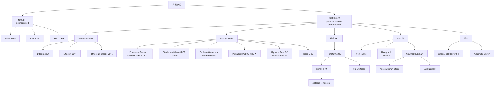
| 协议 | 类别 | 安全性来源 | 最终性 | 出块时间 | 真实部署 |
|---|---|---|---|---|---|
| Bitcoin | PoW | 哈希算力多数 | 概率（6 conf ≈ 60 min） | 600s | $1T+ 市值 |
| Litecoin | PoW (Scrypt) | 同上 | 概率 | 150s | $5B+ |
| Ethereum Classic | PoW (ETChash) | 同上 | 概率 | 13s | $2B+，曾被 51% 攻击 |
| Ethereum (Gasper) | PoS+FFG | 经济（slashing） | 经济（2 epoch ≈ 12.8 min） | 12s | $400B+ |
| Cosmos (CometBFT) | BFT-PoS | 2/3 stake | 绝对（即时） | 1-7s | $10B+，IBC 生态 |
| Cardano (Ouroboros Praos) | PoS+VRF | 1/2 stake honest | 概率（settlement param k） | 20s | $20B+ |
| Polkadot (BABE+GRANDPA) | 双层 PoS | NPoS+GRANDPA | 绝对（GRANDPA 终结） | 6s | $10B+ |
| Algorand (Pure PoS) | PoS+VRF 抽签 | 2/3 stake | 绝对（一轮即终结） | 3s | $1B+ |
| Tezos (LPoS) | 委托 PoS | 2/3 stake | 绝对（2 块） | 8s | $1B+ |
| Aptos (AptosBFT v4 → Raptr) | HotStuff 派 | 2/3 stake | 绝对 | 0.125s | $1B+ |
| Sui (Mysticeti) | DAG+BFT | 2/3 stake | 绝对（~390ms） | 0.4s | $5B+ |
| Hedera (Hashgraph) | aBFT | 2/3 stake | 绝对（~3s） | N/A（DAG） | $5B+ |
| IOTA | DAG | tip 选择 | 概率→Coordicide 后绝对 | N/A | $1B+ |
| Solana (PoH+Tower BFT → Alpenglow) | 混合 | 2/3 stake | 经济（32 conf ≈ 12.8s，未来 150ms） | 0.4s | $80B+ |
| Avalanche (Snow*) | 抽样投票 | metastable | 概率终结（β 轮） | 1-2s | $5B+ |
数据来源：各项目官方文档（Algorand pure-PoS 论文、Polkadot wiki、Aptos Baby Raptr 公告、Sui Mysticeti 公告、Hedera 官方文档），均访问 2026-04-27。
PoW 是区块链共识的零点。它绕过 FLP 的方式是放弃决定性最终性——块永远只有概率上的不可逆。后续 PoS / BFT 协议的几乎所有设计选择，都可以读作"对 PoW 某个方面的不满"：嫌电贵 → PoS；嫌 finality 慢 → BFT；嫌单链瓶颈 → DAG。
PoW 安全的四个条件必须同时成立：哈希函数抗预映像、算力市场半开放、≥50% 算力诚实、网络延迟有概率上界。第三条在小币种链不成立，第 7 章 ETC 是反例。Bitcoin 的安全预算约等于年挖矿电费（2024 ~80 亿美元）——这是个粗暴但有效的"攻击者要花多少钱"的下界。PoS 后来用 slashing 风险替代电费充当同一角色。
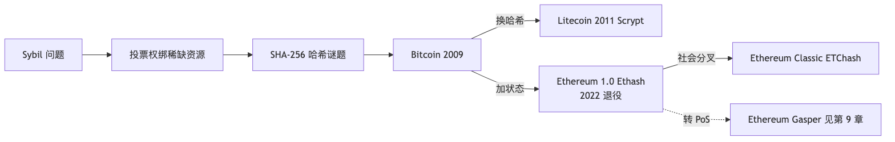
PoW 解决的不是"达成共识"，而是"谁有资格出块"。开放网络下任何人都能创建无穷多账号，"一人一票"立刻被 Sybil 攻击吃死。中本聪的破解思路：把投票权绑定到链外的稀缺资源——电力和硬件。1 万个假账号能伪造，但 1 万份电费做不了假。
哈希谜题是这个绑定的具体形式。SHA-256 输出每位等概率 0/1，前 16 位全 0 的期望尝试次数 = 2^16 = 65536。求一个前 N 位全 0 的输入只能暴力试——抗预映像保证了这点。PoW 的技术内涵就这一句，剩下都是工程包装：难度自动调整把出块速率稳在 10 分钟（类似 TCP 拥塞控制的 AIMD）；最重链规则把"哪条是主链"约化成"哪条累计了最多 work"。
反对意见与反驳。环保派批评 Bitcoin 年耗电堪比荷兰全国（剑桥比特币电力消耗指数）；PoW 派回应：电费就是安全预算，PoS 的 slash 风险必须证明能提供等价砸钱门槛。中心化派担忧 ASIC 把普通矿工挤出，矿池占大头；反驳是经济自检——攻击者自己持币，攻击成功币价崩，自损。
适用场景。Bitcoin 这类全球价值存储链是 PoW 主场；高频应用链 PoW 出块太慢；联盟链直接上 PBFT 更便宜；隐私链（Monero/Zcash）历史用 PoW，但近年向 PoS 漂移。
Mastering Bitcoin 第 10 章把 Bitcoin 共识总结为四步：独立验证交易、独立组装区块、解 PoW、独立选择最重链。本节按这条主线展开，重点放在 Bitcoin 在工程上做了哪些妥协来支撑 17 年从未发生协议级 reorg。
┌─────────────────────────────────────────┐
│ Block Header (80 bytes) │
│ ┌────────────────────────────────────┐ │
│ │ version (4) │ │
│ │ prev_hash (32) ──→ 链接前一块 │ │
│ │ merkle_root (32) ──→ 交易树根 │ │
│ │ timestamp (4) │ │
│ │ bits (4) ──→ 难度 │ │
│ │ nonce (4) ──→ 矿工反复改的 │ │
│ └────────────────────────────────────┘ │
│ Body │
│ ┌────────────────────────────────────┐ │
│ │ tx[0] (coinbase: 矿工奖励) │ │
│ │ tx[1] ... tx[N] │ │
│ └────────────────────────────────────┘ │
└─────────────────────────────────────────┘
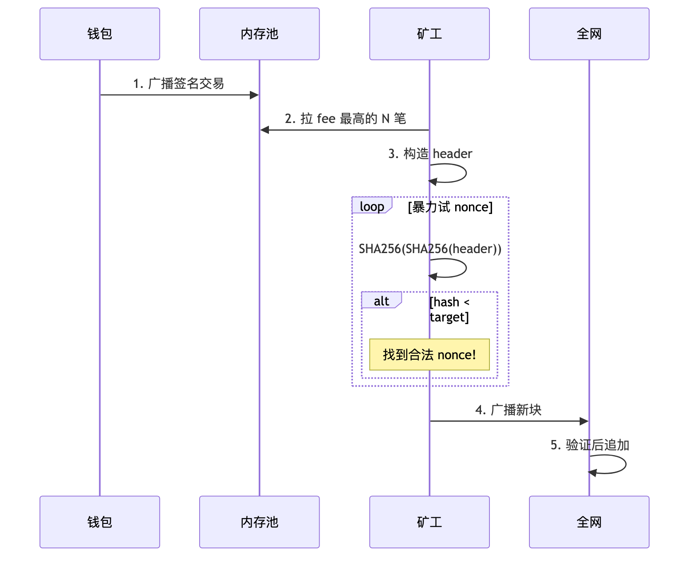
如果难度永远固定：
Bitcoin 的策略：每 2016 块（≈ 2 周）调整一次：
new_difficulty = old_difficulty × (2016 块的实际耗时 / 期望耗时 14 天)
调整幅度限制 [0.25x, 4x]，防止单次跳变过大。
Bitcoin 2024-04 第四次减半后，区块奖励从 6.25 BTC → 3.125 BTC。当前难度约 1.1 × 10¹⁴，全网算力 ~ 600 EH/s（Bitcoin Magazine Pro，2026-04）。
Alice（攻击者，算力比例 q）想骗 Bob（商家，等 z 个 confirmation）。
P(成功双花) ≈ Σ_{k=0..z} P(攻击者前 z 块挖了 k 块) × P(从领先 z-k 块追上)
简化版：当 q < 0.5 时
P ≈ 1 − Σ_{k=0..z} [(λ^k · e^{-λ}) / k!] × (1 − (q/p)^(z-k))
其中 λ = z·q/p
数值结果：
| q (攻击者算力) | z=3 | z=6 | z=12 |
|---|---|---|---|
| 0.10 | 4.4% | 0.024% | 1×10⁻⁹ |
| 0.30 | 25% | 13% | 2.0% |
| 0.40 | 51% | 35% | 16% |
交易所等 6 个确认的原因：q=0.10 时 z=6 已经把成功率压到 0.024%，这是中本聪在白皮书附录给的参考值。q 假设要符合实际——Bitcoin 算力 600 EH/s，凑齐 q=0.1 也要 60 EH/s，租 NiceHash 一天约 400 万美元，攻击不划算。但小币种（如 ETC）算力小很多，q=0.5 实际可达，就被 51% 攻击过。
Bitcoin 文档说"最长链规则"，但实际是最重链（cumulative work）。区别：如果攻击者用低难度块伪造一条更长的链，节点不应接受。最重链规则会拒绝它，最长链规则会被骗。代码 code/pow_chain.py 用的就是最重链规则。
Foundry USA + AntPool 两个矿池占全网算力 ~ 50%，理论上存在 51% 攻击风险。实践层面的反驳：算力不等于矿池——矿池只是把多个矿工的算力聚合到同一节点提交，矿工随时能切到别的池。但这种"切池压力"是事后惩罚，事前合谋仍可行。
17 年零协议级 reorg 不是协议有多厉害，而是中本聪在三处做了保守取舍：①脚本图灵不完备（无法表达可能死循环或非确定的程序）；②单 leader、单链、概率最终性，把"快"全让给"稳"；③块大小 1MB 限制吞吐 ~7 TPS，把节点门槛压到家用机能跑。代价是 DApp 生态弱、TPS 跟不上日常支付。Lightning（第 28 章）正是为了打破第三条限制而生的链下层。
矿池集中是 Bitcoin 当前最大的去中心化软肋。Foundry USA + AntPool 占全网算力 ~50%，理论 51% 风险存在。反驳是"算力不等于矿池——矿工随时切池"，但事前合谋、事后惩罚的非对称仍是真实风险。
| 时间 | 块奖励 / 块高 | 事件 |
|---|---|---|
| 2009-01 | 50 BTC / 0 | Genesis |
| 2010-08-15 | — | 整数溢出 bug，攻击块铸 1.84 亿 BTC，社区软分叉 reorg 53 块 |
| 2012-11 | 25 BTC / 210k | 第一次减半 |
| 2013-03 | — | v0.7/v0.8 LevelDB 兼容 bug，24 块 reorg |
| 2016-07 | 12.5 BTC / 420k | 第二次减半 |
| 2020-05 | 6.25 BTC / 630k | 第三次减半 |
| 2024-04 | 3.125 BTC / 840k | 第四次减半 |
两次重大 reorg 都是客户端 bug 而非协议攻击——协议层稳，实现层是脆弱点。这条规律对所有共识协议适用，第 34 章 Prysm finality stall 是 PoS 版的同类案例。
Litecoin 与 Bitcoin 的协议差异只有两处：哈希函数 SHA-256 → Scrypt，出块时间 10 min → 2.5 min；其余（UTXO 模型、4 年减半、最重链规则）原样照搬。这让它成了"控制变量法"的天然实验场，揭示一条规律：抗 ASIC 设计撑不过 3 年。
Scrypt（Colin Percival 2009，原用于反 rainbow table）是 memory-hard 函数：先生成长伪随机 buffer V[0..N-1] 占内存，再按上一步 hash 索引随机读取 V 做 XOR。ASIC 想加速必须同时砸 N MB SRAM，硅片成本不再线性下压。设想很优雅，2014 年仍出现了 Scrypt ASIC——优势只维持了 3 年。Ethash（Ethereum 1.0）撑了 ~3 年，Vertcoin 的 Lyra2REv3 更短。Monero 的反应是反向操作：每年硬分叉换算法（CryptoNight → RandomX 等），用社会工程让 ASIC 厂商不敢投流片成本——这是目前唯一持续有效的反 ASIC 路线。
Litecoin 的真正生态价值是"BIP 试验田"：SegWit 2017-05 在 Litecoin 激活，4 个月后 Bitcoin 跟进；MWEB 2022 在 Litecoin 上线，Bitcoin 至今未跟。算力规模只有 Bitcoin 的 ~1%——理论上易被 51%，实践无大事故，但这份"运气"在 ETC 案例里就用完了。
Mastering Bitcoin 第 10 章把 51% 攻击描述为"控制 >50% 算力的对手 fork 主链做双花"。教科书写得轻描淡写，是因为 Bitcoin 算力 600 EH/s 把这条曲线推到了经济不可行。但理论曲线对小币种链是真实的。ETC 在 19 个月内被攻击四次，每次都是同一个公式：算力市场流动性 ≫ 该链总算力。
2016 年 The DAO 黑客事件后以太坊社区分裂：多数派硬分叉退还黑客资金 → ETH，少数派「Code is Law」拒绝退还 → ETC。这是区块链史上首次"社会层共识"与"协议层共识"的公开冲突——Lamport 的 BFT 论文没考虑社会层。Vitalik 后来反思："我们当时不敢相信 PoS 能扛 The DAO，所以选了硬分叉"，这成了他力推 PoS + slashing 的动机。
| 时间 | reorg 深度 | 损失 | 攻击成本 | ROI |
|---|---|---|---|---|
| 2019-01 | ~100 块 | $1.1M | 未知 | — |
| 2020-08-01 | 4000+ 块 | $5.6M (807K ETC) | 17.5 BTC ≈ $204K | ~27x |
| 2020-08-06 | 4000+ 块 | 类似 | 类似 | — |
| 2020-08-29 | 7000+ 块（2 天挖矿） | 类似 | 类似 | — |
攻击模板：在交易所充值 ETC → 链上确认 100 块即放 → 私下租 NiceHash 秘密挖更长链 → 提走 USDT/BTC → 广播私链替换公链 → 自己充的 ETC 回到自己钱包。数据来源：Bitquery 2020-08 攻击分析（2026-04-27）。
ETC 与 ETH 共用 Ethash 算法，2020 年 ETC 算力只占 Ethash 全网的 ~5%。攻击者从 NiceHash 租用几十万美元就够 51%。Bitcoin 全网 600 EH/s，NiceHash 仅有 ~1 EH/s SHA-256 算力——51% 所需是市场总量的 300 倍，经济不可行。
PoW 链的真实安全公式不是"绝对算力"，而是"算力 / 同算法可租算力"。这条公式适用于所有租得到算力的小币种链。
ETC 在 2020-11 Thanos 升级把 Ethash epoch 翻倍 → ETChash，让 ETH 矿机不能直接挖 ETC。事后无大规模攻击。讽刺的是 2022-09 ETH 转 PoS 后所有 Ethash 矿机失业，部分流入 ETC，反而让 ETC 算力翻倍变得更安全。多家交易所把 ETC 确认数提到 5000+ 块（~18 小时）——比 BTC 6 conf 多一个数量级，本身就是产品体验代价。
工程结论：小币种 PoW 链选独占哈希算法，盯算力市场流动性，确认数随链上算力动态调整，必要时迁 PoS / hybrid（如 Decred）。这条困境也是 Ethereum 自己 2022 年转 PoS 的动机之一。
把 PoW 翻译成 PoS 是简单的：算力 → 质押，电费 → slash 风险，Sybil 防御从"硬件稀缺"换成"代币稀缺"。难的是替换之后冒出三个 PoW 没有的问题，每个 PoS 协议都必须给出三份答案。
Nothing at Stake：链分叉成 A、B 时 PoW 矿工算力只能投一条，PoS 签名免费 → 两条都签稳赚。解法：slashing 把双签变得比诚实更亏。
Long-range attack：旧验证者私钥仍在手中，攻击者低价收购可伪造一条远古历史。解法：弱主观性 + checkpoint，让新节点拒绝接受太老的"另一条历史"；或 Cardano 的 chain density 判定（Genesis）。
Stake grinding：leader 选举依赖随机数，攻击者调整自己的签名/状态影响下一轮随机数。解法：VRF（私下掷骰子带证明）或外部 randomness beacon。
下面六个流派的差异本质上就是三种问题各自怎么解：
| 流派 | Nothing at Stake | Long-range | Grinding |
|---|---|---|---|
| Ethereum Gasper | Casper FFG slashing | weak subjectivity | RANDAO + VDF（计划中） |
| Cosmos Tendermint | double-sign slashing | weak subjectivity | proposer 轮值 |
| Cardano Ouroboros | slashing（晚期版本） | Genesis chain density | 多方计算随机性 |
| Polkadot BABE+GRANDPA | equivocation slashing | weak subjectivity | VRF |
| Algorand Pure PoS | 无 slashing（honest majority） | 不适用（链短期即定） | VRF 私下抽签 |
| Tezos LPoS | double-baking slashing | checkpoint | seed nonce revelation |
Casper FFG（Buterin/Griffith 2017）和 LMD-GHOST（基于 Sompolinsky-Zohar 的 GHOST）是两个独立组件，Gasper 是把两者粘起来的胶水。核心设计选择：fork-choice 和 finality gadget 分层做不同取舍——LMD-GHOST 在分区时继续出块（liveness 优先），Casper FFG 在分区时拒绝 finalize（safety 优先）。这是 Ethereum 与 Tendermint 最深的分歧（后者两件事一起做，分区时直接停链）。Mastering Ethereum 第 14 章把 Casper 介绍为"hybrid PoW/PoS finality gadget"，2020 年后 PoW 部分被去掉，纯 PoS 版就是 Gasper。
┌──────── 1 epoch = 32 slot = 384s = 6.4 min ────────┐
│ │
│ slot 0 slot 1 ... slot 31 │
│ [block][block]...[block] │
│ ↑12s ↑12s ↑12s │
│ │
│ 每 slot：1 个 proposer，1 个 32-人 committee 投票 │
│ 每 epoch 末尾：checkpoint │
└──────────────────────────────────────────────────────┘
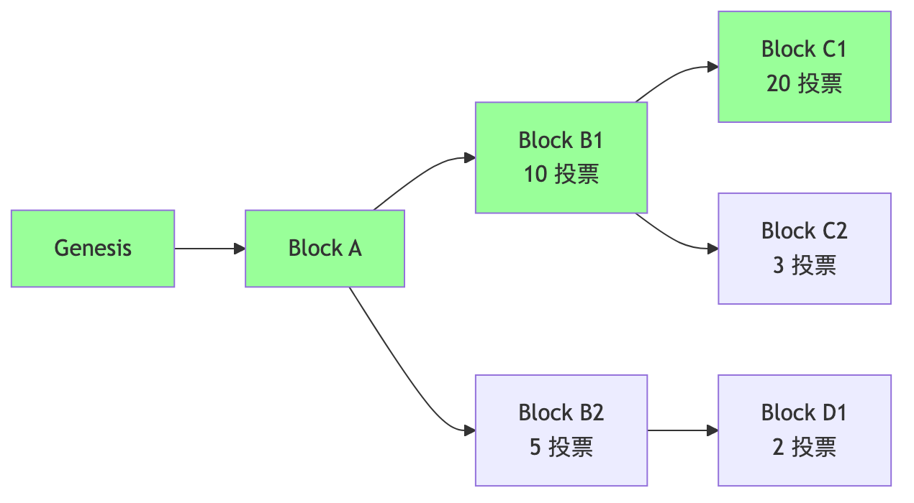
LMD-GHOST 选择最重子树（用最新投票算）。上图中：
→ head = C1（B1 子树中最大的）。绿色路径 = canonical chain。
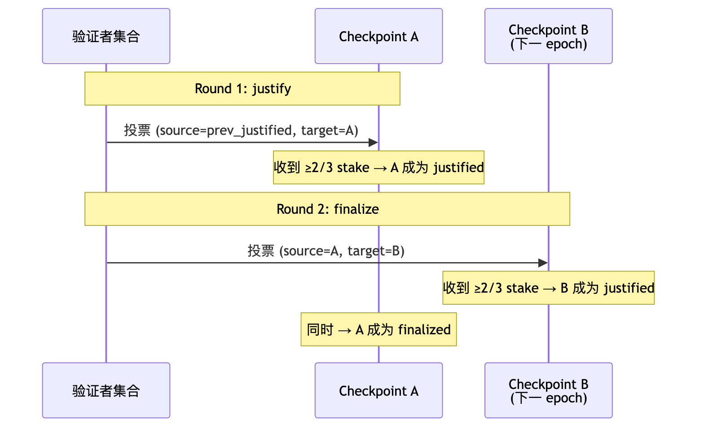
No Double Vote：同一个 epoch 不能签两个不同的 target。No Surround Vote：不能让旧投票 (s₁,t₁) 包围新投票 (s₂,t₂)，即不能有 h(s₁) < h(s₂) < h(t₂) < h(t₁)。
任一违反 → 立即 slash。这就是 Ethereum 把"经济最终性"量化的方式：要 revert 一个 finalized block，至少要让 1/3 stake 接受 slash。当前总质押 ~3500-3700 万 ETH（2026-04），1/3 ≈ 1200 万 ETH（数百亿美元）。
注意区分：上述 slash 针对的是 Casper FFG 的 double/surround vote。LMD-GHOST attestation 重投不直接被 slash，而是被 fork-choice 经济性惩罚——投错链的 attestation 拿不到正确链上的 reward，长期下来余额相对受损。
≥1/3 stake 离线时，FFG 凑不齐 2/3 票。Inactivity Leak：每 epoch 离线验证者余额指数累积削减，数周后离线方份额降到 < 1/3，活跃方重新够 2/3，finality 恢复。短期牺牲 safety（不 finalize），保住 liveness（LMD-GHOST 照走），经济惩罚把 liveness 拉回来。
当前 finality 12.8 min 仍嫌慢。Vitalik 在 2022 提出 SSF：每 slot finalize。
挑战：100 万验证者签名聚合不可行。可能解： - Orbit-SSF：分组轮值 - 提高最低质押到 1024 ETH（社区争议大） - BLS 优化
2026-04 状态：仍研究阶段，预计在 Verkle / Danksharding 之后（最早 2027）。来源：ethereum.org/roadmap/single-slot-finality，访问 2026-04-27。
详细复盘见 exercises/03_reorg_postmortem.md，以及第 33 章。要点：
100 万验证者 + 数千节点是 Gasper 的最大成就，也是它 finality 慢（12.8 min）的根本原因——签名聚合压力直接卡住 SSF。EVM + L2 生态把执行层吞吐推到 5 万+ TPS，但共识层吞吐被 1 slot=12s 钉死。下一阶段路线图（第 47 章 SSF/3SF、第 46 章 ePBS、第 53 章 Verkle）都在啃这块石头。
与 Gasper 相反，Tendermint 把 safety 一路硬到底——块 commit 后绝对不可逆，代价是网络分区时直接停链。这套取舍逻辑使它特别适合做"应用专属链"：100-200 个已知 validator，partial-sync 假设接近真实，停链可接受。Cosmos SDK 把它当默认共识引擎，开发者只写 Go 应用层。
历史上叫 Tendermint Core（Buchman 2016；Buchman/Kwon/Milosevic 2018，arXiv:1807.04938），2023-02 原作者 Jae Kwon / AiB 停止支持后由 Informal Systems fork 并改名 CometBFT。v0.34 → v0.38 → v1.0（2025-02-03 v1.0.1）一脉相承，主流 Cosmos 链当前在 v0.38。
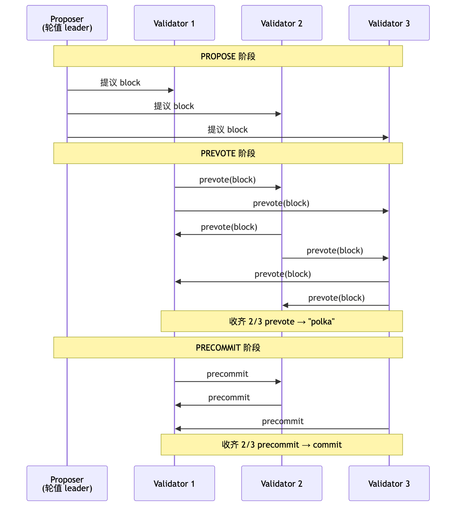
PBFT 是 Tendermint 的直接祖先（第 17 章详解 PBFT 三阶段）。Tendermint 在三处改造它以适配公链场景：
| 维度 | PBFT 1999 | Tendermint |
|---|---|---|
| 客户端模型 | client/replica 显式区分 | 节点对等，无独立 client |
| 通信 | 全连接 O(n²) | gossip O(n) per round |
| Validator 集合 | 静态 | 每块可换（PoS 动态） |
| 出块时机 | client 触发 | 自动按 slot |
absolute finality 与 Ethereum 的 economic finality 不在同一坐标系：absolute 是协议层硬保证，分区时停链；economic 是博弈论保证，分区时继续出块但拒 finalize。两条路线都从同一个 PBFT 谱系出发，只在"分区时怎么办"上做了相反选择。
Cosmos 的真正杀手锏是 IBC（Inter-Blockchain Communication）——absolute finality 让跨链消息的"对方链是否真的提交了这个块"问题变得简单：finalized 就是 finalized，无概率歧义。IBC 网络日活跃链 100+，是除了 Ethereum L2 之外最大规模的实战跨链方案。Osmosis (DEX)、Celestia (DA)、Sei (高频)、dYdX v4 (订单簿) 都是 Cosmos 链。
Cosmos Hub 自 2019 launch 至今从未 reorg（absolute finality 保护），但发生过数次 validator 离线超 1/3 导致链停约 1 小时——不是事故，是协议设计选择。2023-02 Tendermint Core → CometBFT 改名，v0.34 完全兼容；2025-02-03 v1.0.1 引入 PBTS（Proposer-Based Timestamps）。
Tendermint 走 BFT 路线（每块多轮投票），Ouroboros 走 chain 路线（单 leader 出块、概率最终性），更接近 PoW 的形态。它的差异化点是学院派：第一个带形式化安全证明的 PoS 协议（Kiayias et al. 2017，CRYPTO），后续 Praos/Genesis/Peras 每版都附论文。
工作方式：每个 epoch（5 天）开始时用上一 epoch 的随机数 + VRF 私下确定本 epoch 每个 slot 的 leader。leader 只有自己知道，slot 到来时出块并附 VRF proof，他人验证。"私下"这点和 Algorand 一脉相承（都用 VRF），但 Ouroboros 是 leader 单一出块，Algorand 是 committee 多人投票，是不同方向的工程化。
VRF（Verifiable Random Function）：
输入：私钥 sk, 消息 m
输出：(随机值 y, 证明 π)
性质：
1. 给定 (pk, m, y, π)，任何人能验证 y 是 sk 的合法输出
2. 没 sk 的人无法预测 y
3. y 在统计上不可区分于真随机
VRF 就是「带证明的伪随机」。每个节点能私下"掷骰子"，掷完能向别人证明自己没作弊。
来源：Cardano Developer Portal，访问 2026-04-27：https://developers.cardano.org/docs/operate-a-stake-pool/basics/consensus-staking/
| 版本 | 年份 | 关键升级 |
|---|---|---|
| Ouroboros Classic | 2017 | 最早版本，需要全局同步时钟 |
| Ouroboros Praos | 2018 | 引入 VRF 私下选举，对部分异步网络鲁棒 |
| Ouroboros Genesis | 2018→2024 mainnet | 解决 long-range attack，新节点能从 genesis 同步 |
| Ouroboros Peras | 2025 | 加快 settlement（"快终结" gadget） |
来源：Cardano.org 2024-05-08 blog "Ouroboros Genesis design update"，访问 2026-04-27。
Ouroboros Genesis 通过"chain density"判定抵御 long-range attack：遇到候选分叉时，比较两条链在过去 K 个 slot 内的块密度——诚实链 ≥ k/2 个块，伪造链很难维持该密度。新节点能完全从 genesis 同步，零外部信任。
| 链 | 新节点同步 |
|---|---|
| Ethereum | 必须信任一个 weak subjectivity checkpoint（朋友/EF/交易所） |
| Cardano (Genesis) | 完全从 genesis 同步，零信任假设 |
来源：IOG 2024-10-14 blog "Ouroboros Peras: the next step"，访问 2026-04-27。
Genesis 是 Ouroboros 在 long-range attack 上做出的独特解法——其他 PoS 链都用 weak subjectivity，Cardano 选择形式化证明 chain density 检测。代价是 20s 出块、250 TPS 这一段性能数字平庸。Plutus + eUTXO 让智能合约学习曲线陡（与 EVM 模型几乎不互通），是 DeFi 生态相对薄的根本原因。链层从无 reorg 超过 settlement param k 的纪录。
Polkadot 把 Gasper 的"出块层 + finality gadget"分层做得更彻底。BABE 负责出块（VRF 选 primary slot leader，思路与 Ouroboros Praos 同源），GRANDPA 负责 finalize——但与 Casper FFG 不同，GRANDPA 一次能 finalize 一段链的最长公共前缀，不是单块。两层各自承担安全性的一部分：BABE 出概率块，GRANDPA 把任意时刻已稳定的链段一次性敲死。
GHOST-based Recursive ANcestor Deriving Prefix Agreement：每次 finalize 一段链的"最长公共前缀"，不是单块。
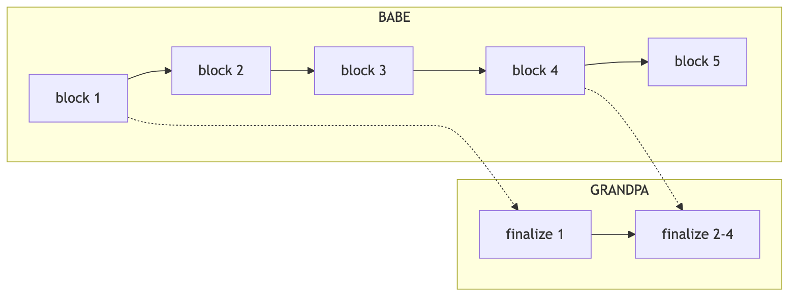
BABE 持续出块；GRANDPA 隔一段时间投票，一次 finalize 多个块（图中一次 finalize 了 2-4）。
| 维度 | Ethereum Gasper | Polkadot BABE+GRANDPA |
|---|---|---|
| 出块层 | LMD-GHOST | BABE (VRF-based) |
| 终结层 | Casper FFG（每 epoch finalize） | GRANDPA（任意时刻可 finalize） |
| 终结粒度 | 块 | 链段（前缀） |
| 验证者数 | ~100 万 | ~300 |
| Slashing | 有 | 有 |
承载 BABE+GRANDPA 共识的核心链。验证者只验证中继链 + 分配的 parachain slot。
通过竞拍获得 slot 的应用链。每个 parachain 有自己的 collator 节点收集交易，但安全靠中继链 finality。
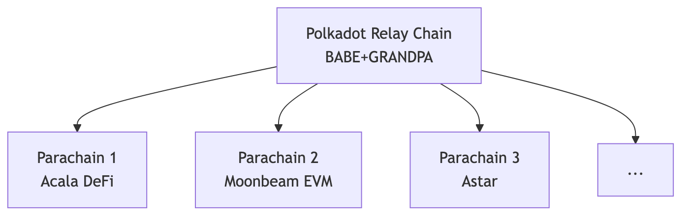
平行链共享中继链 finality 是 Polkadot 与 Cosmos IBC 的关键差异：Cosmos 各链独立 finality，跨链消息要等对方链 finalize；Polkadot 平行链没有自己的 finality，全部依赖中继链 GRANDPA 一次敲定。代价是 600 个 validator 比 Ethereum 少两个数量级，Substrate 框架学习曲线陡。2024 Polkadot 2.0 路线图把 slot 拍卖换成 agile coretime（按 core-second 租用），是对早期 slot 拍卖资本门槛过高的反应。
Algorand（Micali 等人，2017）的核心赌注是"committee 私下选举"——每块抽出 ~1000 人 committee，成员公布 VRF proof 之前连自己都不知道被选上。这绕过了 nothing-at-stake 问题（链没有持续 fork 的窗口），代价是没有 slashing（丢私钥不赔钱），而是用 honest-majority 假设 + committee 每步换人来防御。这是与所有其他 PoS 链最大的差异：不靠经济惩罚，靠"攻击者根本不知道该攻击谁"。
2024-09 起 Algorand 改为主动质押模型（之前 ALGO 自动在线），与其他 PoS 趋同；但 VRF sortition 这套核心机制保留。
每一块开始时：
for each ALGO holder with key sk:
seed = blockchain_round_seed
(y, π) = VRF(sk, seed)
# y 是 [0, 1] 之间的随机数
if y < threshold(my_stake):
I'm selected for this round!
publish (block_proposal, y, π)
关键：sortition 是私下进行的——直到我自己公布 VRF proof，没人知道我被选上了。这就是它抗"针对性 DDoS"的方式：攻击者根本不知道该攻击谁。
委员会选出来后，做一个简化的 BFT：
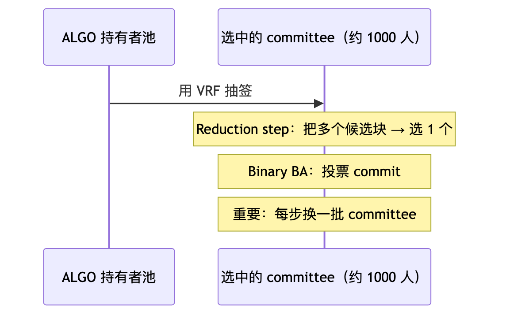
Algorand 论文证明：在 honest-majority（≥ 2/3 stake honest）假设下，BA⋆ 能在 O(1) 轮内 finalize。当前出块时间约 3 秒。
Algorand 的"absolute finality" 是第一轮就 finalize——比 Cosmos 还彻底。
Algorand 的答案：committee 每块都换 + 单轮即 finalize。Nothing at Stake 的前提是"对多条 fork 都签名"，但没有持续 fork 的可能。代价：一旦 < 2/3 honest，链停（safety 优先）。
Algorand 偏向"机构链"路线：CBDC（El Salvador、Marshall Islands）、carbon credits、tokenized securities（Hesab Pay）。DeFi 生态较 Ethereum 弱。
单轮 finality + 6000 TPS 是 Algorand 性能数字最亮眼的部分，但生态押注机构链（CBDC、tokenized securities），DeFi/NFT 与 Ethereum 不在同一量级。2024-06 一次 ~2 小时停滞事件验证了 Algorand 选 safety 牺牲 liveness 的设计——relay 节点配置问题导致出块中断，但绝对终结性保留，无 reorg。这与 Cosmos 的"validator 离线超 1/3 链停"是同一类设计后果。
Tezos 与前面五个 PoS 的差异不在共识算法本身，而在经济模型 + 治理路径两层。委托不锁仓（"liquid"）、链上自动协议升级（无需硬分叉）——这两点把 Tezos 从纯共识协议变成"协议本身就能投票升级自己"的系统。2022 年 Tenderbake 升级后底层共识从 LPoS 变成 BFT 风格（基于 Tendermint），但治理与委托模型没动。
| 术语 | 含义 |
|---|---|
| Baker（烤面包） | Tezos 里的"出块者"。Baking = 出块 |
| Endorser | 验证者；负责"背书"已出块 |
| Delegate | 把投票权委托给 baker 的普通持币人 |
| Liquid | 委托不锁仓——随时可改委托对象 |
委托不锁仓：钱还在账户里，收益归委托的 baker，baker 分成给你——类似活期理财而非定期。
每块：
1 个 baker 烤块（按 stake 比例随机选）
32 个 endorser 背书前一块（也按 stake 比例随机）
baker 没及时烤 → 槽位空 → 罚款
baker / endorser 双签 → slash
来源：OpenTezos / Tezos.com，访问 2026-04-27。
Tezos 不是 DPoS（Delegated PoS，如 EOS / Tron）。区别：DPoS 有固定 N 个超级节点（EOS 21 个），LPoS 没有固定数量，bakers 数量动态浮动。
| 风格 | 代表 | 验证者数 | 委托是否锁仓 |
|---|---|---|---|
| 直接 PoS | Ethereum | 100 万 | 是（32 ETH） |
| LPoS（流动） | Tezos | 数百 | 否 |
| DPoS（委托） | EOS / Tron | 21-100 | 是 |
| Pure PoS | Algorand | 全民 | 否（自动参与） |
Tezos 最独特的设计：协议本身可以投票升级，无需硬分叉。至 2026-04 已激活 18 次以上（Athens / Babylon / Carthage / Delphi / ... / Quebec / Rio）。
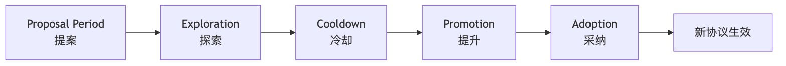
每阶段约 2 周，整个升级周期约 2 个月。
链上自动升级是 Tezos 与所有其他链的本质差异。Bitcoin 的 Taproot 走了 2 年软分叉、Ethereum 每次 hardfork 要协调全网客户端同步发版；Tezos 累计 18 次以上协议升级（Athens / Babylon / ... / Quebec / Rio），全部用链上投票完成。代价是治理周期约 2 个月，对突发安全升级不够敏捷。NFT 生态（Hic et Nunc 等）相对强，DeFi 弱。
2018-06 mainnet（经过 2 年法律纠纷）；2019 Athens 第一次链上升级成功；2022 Tenderbake 升级把底层共识从 LPoS 改为 BFT 风格；2024 Paris/Quebec 性能优化。
PoS 六派走完。它们的共同结构性局限：validator 数量越多投票通信越重、finality 越慢。BFT 派的下一组协议反向操作——从一开始把 validator 数控制住（几十到几百），用精密多轮投票换即时最终性。
PoS 解决"谁出块"，BFT 解决"怎么快速 finalize"。本节后续协议（PBFT / HotStuff / Tendermint / Bullshark / Mysticeti）共享一套词汇——QC、view、lock——在第一次出现时定义，后面章节直接调用。
Quorum Certificate (QC)：≥2f+1 节点对同一消息的签名集合，1.1 节 3f+1 定理保证两个 QC 必有诚实重叠。集齐 QC 等于"网络已达 supermajority"的可转发证据。
View / Round：每个 view 一个 leader 负责提议，其他节点投票。leader 故障时 view-change 选新 leader——这是 BFT 协议处理 leader fail 的标准模式。
Lock：view-change 时为不丢已 prepared 的值，节点锁定某个 view 的提议；新 leader 必须保留这些锁。三阶段 BFT 协议（PBFT、HotStuff）的第三阶段就是为 lock 设计的——见 17.3 节。
graph TD
Lamport[Lamport BGP 1982<br/>3f+1 下界]
Lamport --> Paxos[Paxos 1989 crash-only]
Paxos --> Raft[Raft 2014]
Lamport --> PBFT[PBFT 1999 工程可用]
PBFT --> Tendermint[Tendermint 2014 gossip O(n)]
PBFT --> HotStuff[HotStuff 2019 O(n) responsive]
HotStuff --> LibraBFT[LibraBFT 2019]
LibraBFT --> DiemBFT[DiemBFT v4]
DiemBFT --> AptosBFT[AptosBFT v4 Jolteon]
AptosBFT --> Raptr[Raptr 2024]
HotStuff --> Mysticeti[Sui Mysticeti 2024]经典 BFT 与区块链 BFT 的差异：前者 validator 静态、O(n²) 全连接、规模几十；后者 validator 动态、gossip O(n)、规模上百到上千。Tendermint/HotStuff 都是把 PBFT 的"客户端独立 + 全连接 + 静态集"三个 1999 年假设逐个改掉的产物。
PBFT/HotStuff 的"提议-投票-提交"骨架直接来自 Paxos。两者只容 crash 故障（不容拜占庭）——不直接用于公链，但如果不懂 Paxos 的两阶段就读不懂 PBFT 三阶段为什么需要第三阶段。
原型：希腊 Paxos 岛上的兼职议会。工程本质：N 个节点中容忍 f < N/2 个 crash 故障（不是拜占庭）的共识协议。
角色：
proposer：提议者
acceptor：决定接收哪个提议
learner：学习已通过的提议
两阶段：
Phase 1: prepare（占位）
proposer 选编号 n，向多数 acceptor 发 prepare(n)
acceptor 承诺不再接受编号 < n 的提议
Phase 2: accept（提议）
收到多数承诺 → proposer 发 accept(n, v)
acceptor 接受 → 通过
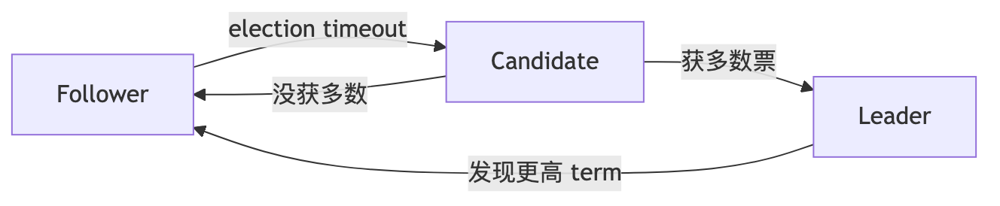
三个角色（Leader / Candidate / Follower），选举超时随机化（150-300ms）避免 split vote。
Raft 的工程影响巨大：etcd / Consul / TiKV / CockroachDB 都用 Raft。但都是 crash-fault-tolerant，不是拜占庭——所以在公链上不能直接用。
来源：Raft Wikipedia / raft.github.io，访问 2026-04-27。
| 维度 | Paxos | Raft |
|---|---|---|
| 发明 | 1989 Lamport | 2014 Ongaro/Ousterhout |
| 容错 | crash f < N/2 | 同左 |
| 论文可读性 | ★☆☆☆☆ | ★★★★★ |
| 工程实现 | Multi-Paxos / Mencius / EPaxos | etcd / Consul / TiKV |
| 是否可用于公链 | 否（不容拜占庭） | 否（同上） |
Paxos/Raft 假设故障节点只是停掉，不会作恶。公链节点可故意签错、向不同人发矛盾消息、伪造历史——Byzantine 故障下"诚实 = N/2+1"不足以保证安全。Castro-Liskov 把这条门槛改为"诚实 ≥ 2/3"（即 n=3f+1）就是 PBFT。
工程影响：数据中心几乎所有强一致性系统都跑 Raft——etcd、Consul、TiKV/TiDB、CockroachDB；联盟链/许可链（Hyperledger Fabric 后期、企业 BaaS）也用 Raft，因为身份已知，无需 BFT 开销。
PBFT（Castro-Liskov 1999）是第一个 BFT 工程可用方案。在 PBFT 之前的 BFT 协议要么纯理论，要么在同步假设下，运行不动公网。PBFT 的贡献是：n=3f+1、三阶段（PRE-PREPARE/PREPARE/COMMIT）、客户端 5 阶段内得到回应、partial-sync 模型。所有现代区块链 BFT（Tendermint、HotStuff、Bullshark）都直接对照 PBFT 改进。
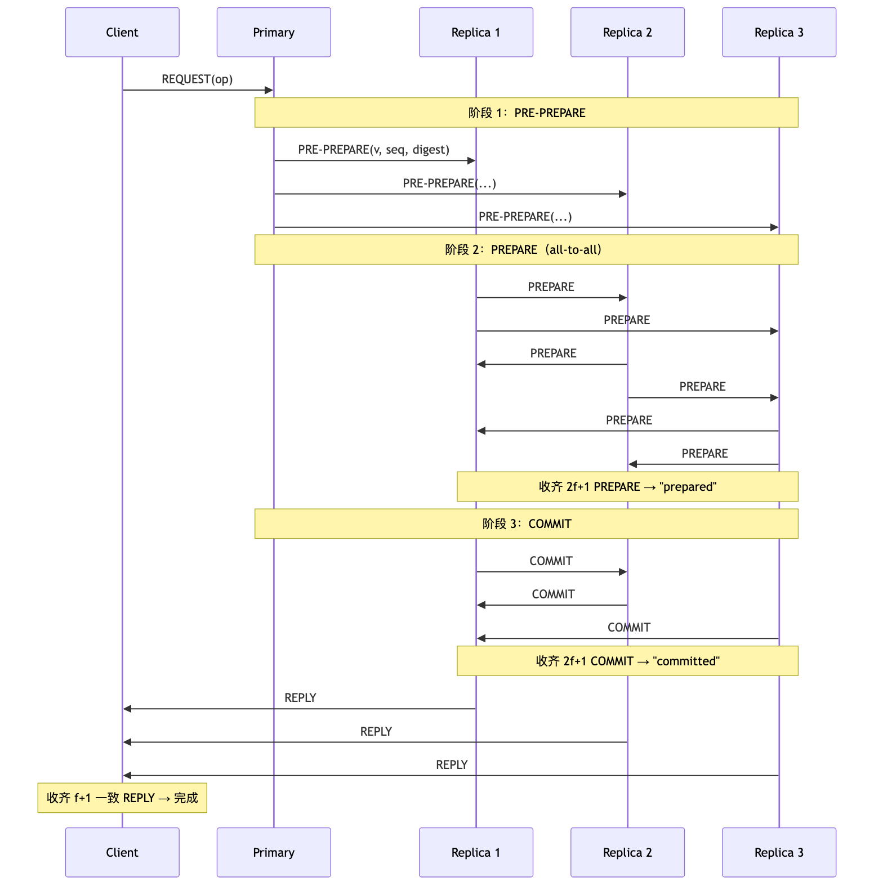
两阶段无法在 view-change 时保留"已 prepared 但未 commit 的请求"。第三阶段引入锁机制，让新 leader 必须保留前 view 的 prepared 值。
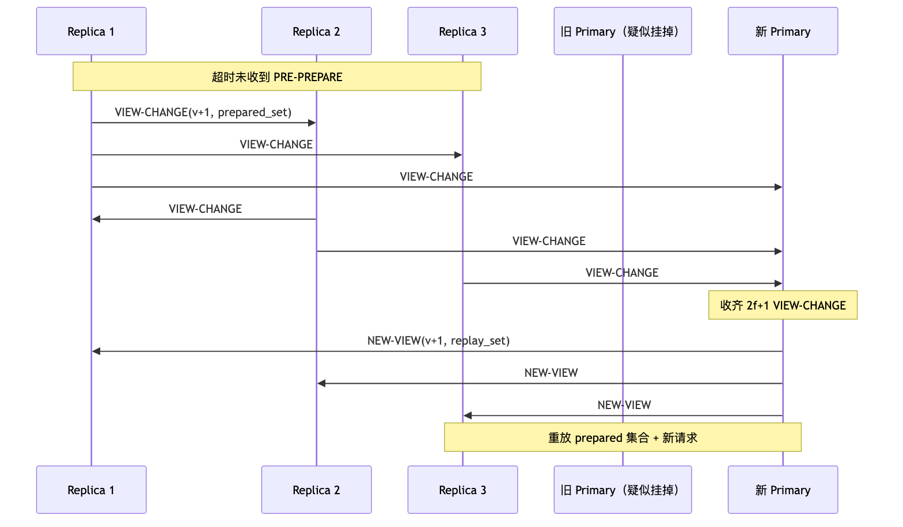
| 局限 | 工程影响 |
|---|---|
| O(n²) 通信 | n=100 时一轮万条消息，公链不可扩 |
| 静态 validator set | 不能动态加 / 退节点 |
| 假设客户端独立存在 | 区块链场景下客户端 = 节点，模型不直接适用 |
→ Tendermint / HotStuff 都是冲着这些局限改进。
工业落地集中在节点数 <30 的联盟链——Hyperledger Fabric v1.0、政府/银行许可链。一旦 n>50，O(n²) 通信开销难承受。学术地位上 PBFT 是 BFT 的"Hello World"，Tendermint/HotStuff/Aardvark/Zyzzyva/SBFT 都把它当 baseline。下一节 HotStuff 把通信压到 O(n) 是直接奔着这条限制去的。
HotStuff（Yin et al. 2019，PODC best paper）相对 PBFT 做了两件事：①节点不再 all-to-all 广播投票，而是只发给 leader，leader 聚合成 QC 后再广播——通信从 O(n²) 降到 O(n)；②responsive——leader 收齐 n-f 投票即可推进，无需等已知最长网络延迟 Δ。PBFT 不 responsive，必须等 Δ。这两点让 HotStuff 成了所有 Diem 系（Aptos、Sui、Movement、Espresso）的母本。
阶段名与 PBFT 重叠但语义不同：HotStuff 每阶段都是 leader 中转聚合 QC（O(n)），不是 all-to-all（O(n²)）。第三阶段（COMMIT）的存在原因和 PBFT 一样——见 17.3 节关于 lock 的解释。
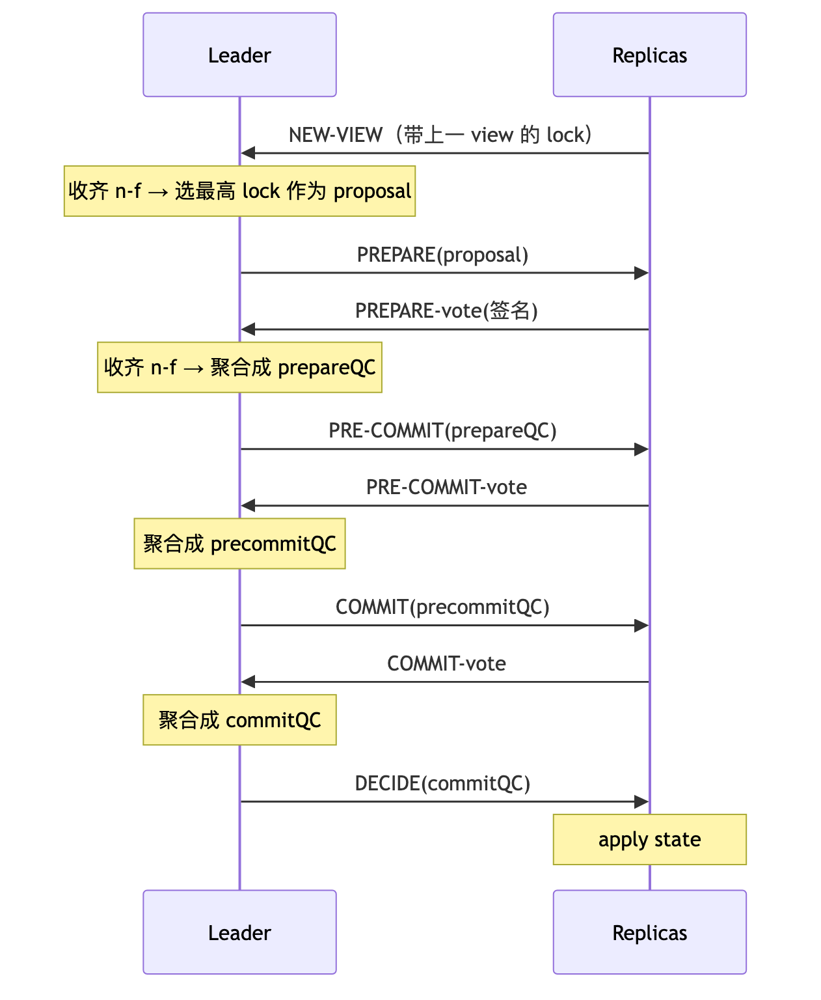
QC = Quorum Certificate（聚合签名证据）。
让每个 view 提议一个新块，新块的 PREPARE 复用上一块的 PRE-COMMIT 投票。三个 view 流水线推进：
view 1 2 3 4 5 6
块 B1 B2 B3 B4 B5 B6
B1: PREPARE PRE-COMMIT COMMIT DECIDE
B2: PREPARE PRE-COMMIT COMMIT DECIDE
B3: PREPARE PRE-COMMIT COMMIT DECIDE
→ 稳态吞吐 = 每 view 1 块，单块 commit 延迟 = 3 view。
HotStuff 论文 (2019, PODC best paper)
↓
LibraBFT (Facebook Libra 2019)
↓
DiemBFT v4 (2021) → Diem 关闭，团队带代码去 Aptos
↓
Jolteon = AptosBFT v1 (2022 active pacemaker)
↓
AptosBFT v4 (2023 reputation-based leader)
↓
Raptr (2024-09 提案；2025-06 Baby Raptr 主网激活)
工程门槛主要在 threshold signature（BLS 聚合）——这也是为什么 HotStuff 直到 BLS12-381 库成熟后才大规模工业化。来源：Aptos Foundation "Baby Raptr Is Here"（2026-04-27）。
HotStuff 是协议骨架，AptosBFT 是把骨架打磨成主网产品的 6 年工程链路。本章重点不再是"算法是什么"（已在第 18 章给出），而是"工业化过程中加了哪些非协议成分"——主动起搏器、reputation-based leader、Quorum Store mempool、prefix consensus。
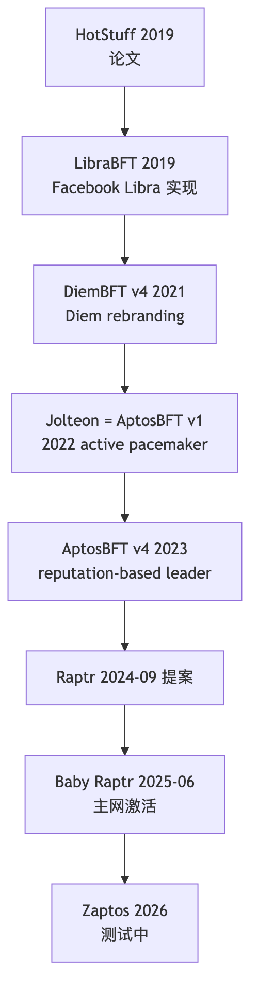
不依赖 timeout，改为 leader 主动发起 view 切换，view-change 延迟从 5 消息降到 3 消息，commit latency 降 ~33%。
v4 引入 reputation-based leader election：leader 除质押外还看历史表现（出块速度、掉线率、是否 equivocate），是"GPA + 出勤率 + 工作表现"的综合评定。
Aptos 不转 DAG 共识，但把 Narwhal 的 mempool 设计借过来（Quorum Store）——只取"mempool 解耦"的收益，不为 DAG 而 DAG。
来源：Stakin 2025 ecosystem report，访问 2026-04-27。
第一个 Raptr 组件上线主网。完整 Raptr 仍在分阶段推进。
Aptos 与 Sui 同出 Diem/Libra 团队，都用 Move 语言，共识却选了相反路线：Aptos 保 HotStuff 单链单 leader 加 Narwhal mempool；Sui 押注 DAG 共识（第 23-24 章）让所有 validator 同时广播，共识只在 DAG 上做总序。这是过去三年共识层最戏剧化的一次工程哲学分叉——从同一个 codebase 出发，三年后两条路线成为本册第 19 章和第 24 章。
链式共识的瓶颈在 leader——任意时刻只一个节点出块，吞吐被该节点的网络/CPU/磁盘上限钉死。DAG 共识的破解思路是把分布式共识的两件事拆开：可靠传输（哪些 tx 已被网络收到）由所有 validator 并行处理；总序（按什么顺序提交）只在已传输的 DAG 上做轻量计算。链共识把两件事耦合在一起，DAG 共识把它们解耦。
┌─→ A2 ─┐
A1 ───┤ ├─→ A3
└─→ B2 ─┤
└─→ B3
多个 leader 同时出 vertex，共识层只在 DAG 上选 commit 顺序
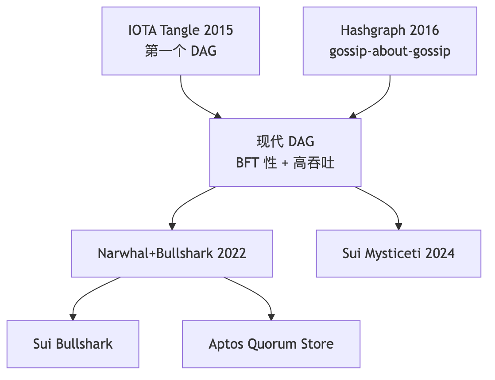
IOTA 是第一个尝试 DAG 公链的项目，但它揭示的与其说是 DAG 共识的可能性，不如说是它的难度。每笔新交易必须引用 2 笔现有交易作 parent，构成无块、无矿工的 Tangle。理论上验证两笔上游 tx 就是发送成本，零 fee 适合 IoT。
实际困境：2017-2023 IOTA 依赖中心化 Coordinator 防 fork——不算真 DAG 共识；零 fee 导致 spam 泛滥；IoT 场景从未大规模落地。Coordicide 升级（2023 起）用 Mana 声誉积分替代 Coordinator，至 2026-04 仍在迭代。叠加 2018 Curl-P 哈希函数漏洞争议（MIT PoC + 团队回应不当）、2020 Trinity 钱包种子词被盗（~$2M 损失），IOTA 整体信任受损。
历史价值在于"DAG 共识能跑"是 IOTA 先证明的——后续 Hashgraph、Narwhal、Mysticeti 都在它的基础上修补具体缺陷。来源：IOTA Foundation 文档（2026-04-27）。
Hashgraph（Baird 2016）的核心招式是把"投票"完全消除：节点两两 gossip 交易时附带"我刚才和谁 gossip 过"的元信息，每个节点本地都能重建完整 gossip 历史 DAG，于是可以本地推演他人投票（virtual voting），不必发任何实际投票消息。这与 PBFT/HotStuff 的"显式投票 → 聚合 QC"路线完全相反——Hashgraph 把投票内化进通信结构本身。aBFT（asynchronous BFT）是它达到的最强等级，已被 Coq 形式化证明。
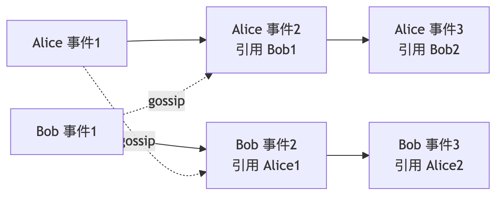
每次 gossip 不只传 tx，还传"我和谁 gossip 过"——这让 DAG 自然形成。
DAG 一致后，每个节点本地推演他人投票，不发实际投票消息，省 O(n) 通信。
Hedera（Hashgraph 的商业实现）2026-04 数据：
来源：Hedera 官方文档，访问 2026-04-27：https://docs.hedera.com/hedera/core-concepts/hashgraph-consensus-algorithms/virtual-voting
技术上 Hashgraph 接近完美（aBFT + 形式化证明 + 10k TPS + 3s finality），但生态被两件事压住：①算法长期受专利保护（到 2030+），核心代码 2022 才部分开源；②39 人企业理事会决策（Google/IBM/Boeing 等），去中心化弱。Hashgraph 的命运是个反面教材：好协议没有开源生态等于没有共识研究的下一代。Mysticeti 等开源 DAG 共识跑得更快，是因为整个开源社区都在迭代。来源：Hedera 文档（2026-04-27）。
Narwhal 把第 20 章的"传输/总序解耦"做成了具体协议。每个 validator 持续把收到的 tx 打包成 batch（vertex），引用前一 round 至少 2f+1 个其他 validator 的 batch——所有 vertex 自然形成跨 round 的 DAG。传输持续进行，共识只在 DAG 上做轻量总序。来源：Danezis et al., "Narwhal and Tusk"（EuroSys 2022）。
每个 validator 持续把它收到的交易打包成 batch（叫 "vertex"），引用前一 round 至少 2f+1 个其他 validator 的 batch。所有 vertex 形成跨 round 的 DAG。
round 1 2 3 4
V1 v1.1 v2.1 v3.1 v4.1
V2 v1.2 v2.2 v3.2 v4.2
V3 v1.3 v2.3 v3.3 v4.3
V4 v1.4 v2.4 v3.4 v4.4
边：v2.1 引用 v1.1, v1.2, v1.3（≥ 2f+1）
投票就是 Narwhal 的 DAG 边，没有任何额外的 BFT 投票消息，投票成本被传输层完全摊销。
Tusk 和 Bullshark 都是 Narwhal 之上的总序协议：Tusk（2022 早期版本）纯异步，更"完美"但延迟稍高；Bullshark（2022 后续优化）使用 partial-sync，延迟更低，是当前主流。
Bullshark + Narwhal 在 100 节点广域网下：
来源：Spiegelman et al. 2022 CCS paper "Bullshark: DAG BFT Protocols Made Practical"，arXiv:2201.05677，访问 2026-04-27。
Narwhal + Bullshark 的关键工程价值是引爆了 DAG 共识研究热潮。下一代改进基本沿同一脉络：Mysticeti（2024，Sui 自研）把延迟压到 <500ms，主要靠 uncertified DAG（24.3 节）；Shoal（2023，Aptos 团队）提高 Bullshark 延迟稳定性；Bullshark 2.0（2024，原作者团队）优化版。
Mysticeti 在 Narwhal+Bullshark 基础上的核心改动是 uncertified DAG：Bullshark 要求每个 vertex 收齐 ≥2f+1 签名才能成为 DAG 节点（贡献 ~50% 延迟），Mysticeti 允许 uncertified vertex 直接入 DAG，commit 时再统一验证 quorum。这把 ~390ms 的 consensus 延迟（v1）进一步压到 ~250ms（v2，2025-11），代价是边复杂度上升。
Mysticeti v1（2024-07 数据）： - consensus 延迟：390ms - end-to-end settlement：640ms - 测试网中比前一代降 80% 延迟
Mysticeti v2（2025-11 数据）： - 进一步降 35% → ~250ms 延迟 - 与共识合并交易验证，减少冗余步骤
来源：Sui blog "Mysticeti v2: Faster and Lighter Sui Transaction Processing"，访问 2026-04-27。
Bullshark 要求每个 vertex 先收到 ≥ 2f+1 签名才能成为 DAG 节点（贡献 ~50% 延迟）。Mysticeti 允许 uncertified vertex 直接入 DAG，commit 时再统一验证 quorum——延迟显著降低，边复杂度上升。
把交易验证（signature check / state precondition check）合进共识层，减少冗余 round-trip：延迟降 35%（390ms → 250ms），提交块数增 ~20%，稳态 ~50k TPS，峰值 >100k。
Sui 主网 2026-04：稳态 ~7000 TPS，峰值 >30k，~110 个 validator，TVL >$1B，从未有 reorg 或 finality stall。Sui 的并行执行是 object-based 声明式：每笔 tx 显式声明读写哪些 object，互不冲突的 tx 直接并行——与 Aptos 的 Block-STM 乐观并行（25.1 节）是对偶选择，前者由用户预申报，后者由运行时检测冲突回滚。这两条路线代表了 Account 模型链突破并行瓶颈的两种工程哲学。
Block-STM 是执行引擎，不是共识。共识（AptosBFT v4/Raptr）决定顺序，Block-STM 在 commit 后乐观并行执行：先假设无冲突，检测到冲突则回滚串行重试。让 Aptos 在 Account 模型下拿到 25k+ TPS。
PoH 是时间戳服务（见第 26 章），不是共识。给共识层（Tower BFT）省去事件排序工作。
两件不同的事：对象 DAG 是状态层的读写依赖；共识 DAG（Mysticeti）是消息层的 vertex 引用。属不同抽象层。
| 名字 | 是共识吗 | 真实角色 |
|---|---|---|
| Aptos Block-STM | ✗ | 并行执行引擎 |
| Solana PoH | ✗ | 时间戳服务 |
| Aptos Quorum Store | ✗ | mempool（学 Narwhal） |
| Sui Mysticeti | ✓ | DAG 共识协议 |
| Polkadot BABE | 部分 | 出块协议（与 GRANDPA 共同构成共识） |
| Polkadot GRANDPA | ✓ | finality gadget |
| Ethereum LMD-GHOST | 部分 | fork choice（与 FFG 共同） |
| Ethereum Casper FFG | ✓ | finality gadget |
Solana 的设计选择和前面所有协议都不同：把"排事件顺序"和"共识"拆成两个独立组件。PoH 是全网一致的时间戳服务（不是共识），Tower BFT 是带 lockout 的 PBFT 变体（是共识）。这套架构 2026 年正在被 Alpenglow（Votor + Rotor）替换——Solana 自己也承认 PoH+Tower BFT 跑了 7 年，5 次以上停机暴露了"全局时间作为单点"的脆弱。
leader 持续跑：
h[0] = some_seed
for i in 1..∞:
h[i] = SHA256(h[i-1])
# 每 N 步，把收到的交易 tx 穿插进去：
if has_pending_tx():
h[i] = SHA256(h[i-1] || tx)
→ 所有 validator 拿到序列后确定地知道每笔交易的相对顺序。PoH 像全网共享的"加密秒表"——验证秒表没倒走，但不决定"哪个分叉合法"（那是 Tower BFT 的职责）。
PBFT 变体，加了lockout 机制：
每次投一个分支，对该分支的承诺时间指数加倍
→ 32 次连续投票后，承诺达到最大 lockout
→ 该分支被认为 economically finalized
PoH 负责"打时间戳 / 排事件顺序"，Tower BFT 负责"决定哪条链合法"。两者分工：
| 时间 | 事件 | 时长 |
|---|---|---|
| 2021-09 | Grape Protocol IDO，每秒 40 万 TX 涌入 | 17 小时 |
| 2022-04 | NFT bot 滥发交易 | 7 小时 |
| 2022-05 | 共识 bug | 4 小时 |
| 2023-02 | 区块状态恢复慢 | 19 小时（最长） |
教训：PoH 把"时间"当全局变量，全局变量在大规模故障时极难恢复。
2025 年 Anza 提出 Alpenglow，要用 Votor + Rotor 替换 PoH + Tower BFT。
时间线： - 2025-09：Solana 治理通过 Alpenglow（98.27% 赞成） - 2026-Q3：Agave 4.1 发布 - 2026-Q4：安全审计 - 2026 年底：mainnet 激活
来源：CoinDesk 2025-09-03 "Solana Community Approves Alpenglow Upgrade"，访问 2026-04-27。
Solana 与 Ethereum 在每个轴上选择都相反，是共识工程取舍的极端样本：
| 维度 | Ethereum | Solana |
|---|---|---|
| 设计目标 | 安全 + 去中心化 | 性能优先 |
| Validator 硬件 | 4 核 16GB | 32+ 核 256GB+ NVMe |
| 节点数 | ~10000+ | ~1500-2000 |
| 区块时间 | 12s | 0.4s |
| 平均 TPS | ~30 | ~4000 |
| 历史停机 | 0 | 5+ 次（最长 19h） |
性能高的代价是恢复成本——PoH 把"时间"做成全局变量，全局变量出错就是全网停机。Alpenglow 替换 PoH 是 Solana 团队对这条结构性教训的承认。
Snow 系（Rocket et al. 2018）和前面所有 BFT 协议结构上不同。PBFT/HotStuff 每决定一块所有 n 节点都参与；Snow 让每个节点只随机问 k=20 个邻居就决定，依赖大数定律——类似选举民调。代价是放弃了 BFT 派的"≤1/3 拜占庭即安全"硬保证，换成 metastable 性质："网络绝大多数最终会偏好同一值"——这是个统计学性质，不是绝对 BFT 保证。这条路线学界至今仍有争议（Bern University 2024 报告）。
Slush（不容拜占庭，只是个 toy）
↓
Snowflake（加 conviction counter）
↓
Snowball（加 confidence counter）
↓
Snowman（线性链版本，Avalanche C-Chain 用）
↓
Avalanche（DAG 版本）
来源：Avalanche 官方文档 / pkg.go.dev/snowball，访问 2026-04-27：
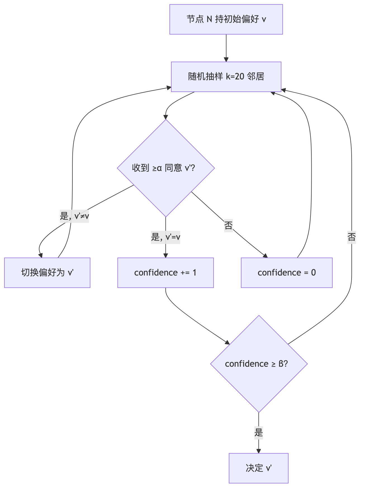
抽 20 个邻居的安全性来自概率：攻击者 <20% 节点时，期望拜占庭 <4 个，达不到 α=15 majority。但这条曲线在攻击者份额 ≥50% 时开始失效，70%+ 几乎一定能控制（见习题 8）——所以 Avalanche 的安全边界 ~50%，与 BFT 经典 33% 不同。这点经常被忽视。Avalanche 团队 2024 提的 Frosty 改进加强了 liveness 保证。来源：crypto.unibe.ch/2024/05/21/avalanche.html（2026-04-27）。
Avalanche 不是单链，而是 X-Chain（资产）+ P-Chain（治理 + staking）+ C-Chain（EVM 兼容）三链。Snowman 共识跑在 P/C-Chain，Avalanche DAG 共识跑在 X-Chain。
三链架构（X-Chain 资产 / P-Chain 治理 + staking / C-Chain EVM）对开发者不友好——多数 EVM DApp 直接跑 C-Chain，X/P 链是历史包袱。2024 Subnets/L1 公告把"起子链"做成基础设施级能力，2025 ACP-77 重构 Subnet 经济激励。Snow 系本身仍是 Avalanche 最强的差异化——但形式化证明的争议让它在企业链场景拼不过 Hashgraph 的 aBFT 标签。
Lightning 不是共识协议，而是绕开共识的工程方案——把高频小额转账从主链卸载到链下双方共识，只用主链做"开/关通道结算"。这条思路后来被 Ethereum L2（rollup）继承——见模块 07。
假设 Alice 一天给 Bob 转 50 次，每次 0.001 BTC，每次手续费 ~ $5，一天 $250 fee，但只转了 ~ $50 价值——荒谬。Lightning 的解法：双方先共同质押 0.05 BTC 开"通道"，通道里随便转账（链下，免 fee），关通道时把"最终余额"上链——只 1 笔交易。
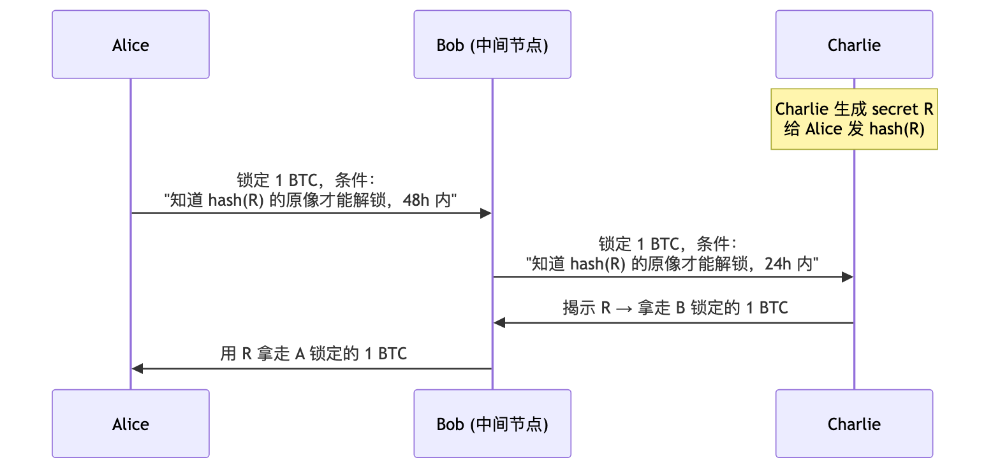
HTLC = Hashed TimeLock Contract。靠hash 验证 + timelock 退款保证：
来源：Bitcoin Visuals / 1ML statistics，访问 2026-04-27。
Lightning 是 L2 思路的鼻祖：链下计算 + 链上结算 + 加密学保证（hashlock + timelock），同样的三件套后来被 Ethereum Optimistic Rollup 替换为"链下 EVM + 周期 batch upload + fraud proof"。两条路线的核心差异在"链下结算"的可信化方式：Lightning 用 hashlock 保证两两通道，rollup 用经济信任 + 数学证明做开放结算。
两条结构性局限：①路由 NP-hard——A→C 间不一定直连，每跳要有足够 inbound liquidity；②Watchtower 问题——离线时对方可能提交旧状态作弊，watchtower 服务监控引入新信任假设。
19 个协议走完，下一章把散落的术语集中辨析：confirmation/finality/liveness/safety/ordering 在不同协议文档含义微妙不同。
DDIA 第 9 章在讨论 consensus 时反复强调：每个保证都要追问"在什么模型下、需要什么前提"。区块链共识协议文档常把 confirmation / finality / safety / liveness 混用，工程决策时踩的坑大多源于此。本章统一定义。
| 维度 | confirmation | probabilistic | economic | absolute |
|---|---|---|---|---|
| 含义 | "块被埋多深" | 越深越难逆转，但永不为 0 | 逆转需可量化经济代价 | 协议层保证不可逆 |
| 例子 | Bitcoin 6 conf | Bitcoin 任意深度 | Ethereum 2 epoch | Tendermint 单块 |
| 工程代价 | — | 等够深（PoW 链） | 看 stake 总量（PoS 链） | 分区时停链 |
PoW 链的概率最终性遵循中本聪公式 P(逆转 z 块) = (q/p)^z（q<p），交易所通常等到 P<0.001% 才入账——Bitcoin q=0.1 时 6 conf P≈0.024% 是这条阈值的来源。Ethereum 经济最终性的具体数字：回滚 finalized 块至少需 1/3 stake 被 slash ≈ 10M+ ETH，是博弈论而非数学保证。Tendermint/Algorand/GRANDPA 的 absolute finality 是协议层硬约束，代价是分区时停链。
Safety = 永不出错（不会两块在同高度都 finalized）；Liveness = 永远在进步（链一直出块）。FAB 的标准定义。两者不能同时百分百保证（FLP），所有协议都在分区时做取舍：
| 协议 | 网络分区时 | 选了什么 |
|---|---|---|
| Bitcoin / Nakamoto | 双方都继续出块，后续重组 | Liveness（safety 概率） |
| Tendermint / Cosmos | 链停 | Safety |
| Ethereum Gasper | LMD-GHOST 继续出块，FFG 不 finalize | 双层分别选择 |
| Avalanche Snow | metastable，可能两边都不收敛 | 概率 safety + 概率 liveness |
Gasper 把 safety 和 liveness 拆到两层做不同选择，是它被低估的工程价值——下一代链（Polkadot / Solana Alpenglow）都在抄这条路。
DDIA 把这两件事画得很清楚：ordering 是给一组 tx 排次序，consensus 是在多个候选 history 中选一个。链共识把两件事耦合，DAG 共识（第 23 章）把它们解耦。Solana 也是解耦的（PoH 做 ordering，Tower BFT 做 consensus），但路线不同——PoH 是单 leader 时间戳，Narwhal 是多 validator 并行 mempool。
| 模型 | 状态形式 | 并行度 | 智能合约 | 代表 |
|---|---|---|---|---|
| SMR | 任意状态 + transition function | 取决于 function | 高 | Tendermint apps |
| UTXO | 不可变输出集合 | 高（独立 UTXO 并行） | 低（图灵不完备） | Bitcoin / Cardano eUTXO |
| Account | 全局地址 → 余额 + 存储 | 低（同账户串行） | 高 | Ethereum / Solana / Aptos |
Aptos Block-STM 是个有趣的妥协：Account 模型 + 乐观并行 + 冲突回滚重排，拿到 ~25k TPS 而不丢智能合约友好性。Sui object-based 是另一极：让用户预申报读写 object，运行时直接并行——把冲突检测前置到 tx 提交时。
| permissioned | permissionless | |
|---|---|---|
| 例子 | Hyperledger Fabric / Hedera | Bitcoin / Ethereum / Cosmos |
| 优点 | 性能高，监管友好 | 抗审查 |
| 缺点 | 去中心化弱 | 性能受限 |
2010-08-15，Bitcoin 唯一一次协议级 reorg。CTransaction::CheckTransaction 对 output value 求和时未检查溢出，攻击者构造一个交易铸出 2 笔各 9.22 亿 BTC（远超 2100 万总量），上链于块 74638。
int64_t sum = 0;
for (const auto& out : outputs) sum += out.value; // 没检查溢出
时间线：0809 UTC 攻击块上链 → 0820 UTC Satoshi 在 Bitcointalk 发警报 → 0900 UTC 修复 patch v0.3.10 发布 → 1330 UTC 社区 reorg 53 块。整起事故 5 小时 21 分。
整数溢出是数字货币经典 bug。此后 Bitcoin 所有 amount check 加溢出验证，Ethereum/Solidity 强制 SafeMath 是同根同源的反应。这次事故是中本聪此后极度保守对待 codebase 的来源——协议层稳，实现层脆弱，是所有共识协议的通用规律。
详细时间线和经济账见第 7 章。本节只补充复盘维度的两点：
①根因结构性：ETC 与 ETH 共用 Ethash，2020 年 ETC 算力仅占 Ethash 全网 ~5%——攻击者付几十万美元就够 51%。这不是实现 bug，是"算法兼容大币种 + 公共算力市场"的结构性脆弱。
②应对反讽：2020-11 Thanos 升级把 Ethash epoch 翻倍 → ETChash 与 ETH 矿机解耦；2022-09 ETH 转 PoS 后 Ethash 矿机失业反而部分流入 ETC，算力翻倍。结构性安全的恢复来自 ETH 的协议变迁，而不是 ETC 自己的努力——共识协议安全有时由生态而非协议决定。
| 时间 | 时长 | 触发 |
|---|---|---|
| 2021-09 | 17h | Grape Protocol IDO，40 万 TX/s 涌入 |
| 2022-01 | 4h | 共识 bug |
| 2022-04 | 7h | NFT bot 滥发交易 |
| 2022-05 | 4h | 共识 bug |
| 2022-06 | 4h | 状态机问题 |
| 2023-02 | 19h | 区块状态恢复慢 |
共同模式：mempool flooding（NFT mint / IDO 4-40 万 TX/s）→ leader 处理不过来 → PoH tick 速率掉 → 全网失步 → validator 重启必须协调同一 snapshot 高度，全局协调慢。这是"全局时间作为单点"的代价——Ethereum 各 validator 可独立恢复，Solana 必须全网同步。
应对：QUIC 替 UDP（2022-Q4）、Stake-weighted QoS（2023）、Firedancer（2023+ 第二客户端）、Alpenglow（2026 替换 PoH+Tower BFT）。前三项是补丁，第四项是结构性承认——Solana 团队 7 年后接受 PoH 这条路走到了头。
slot 3,887,075 proposer 出块迟到 ~4 秒 + proposer boost 滚动升级不一致 + 部分客户端 fork-choice bug，三因合流导致 7 个 slot 内链分叉，7 块被 reorg。FFG finality 全程未受影响——这是 Gasper 双层设计（29.2 节）的实际验证：fork-choice 出错时 finality gadget 还在保 safety。
应对：post-Merge 所有 fork-choice 修改必须打包进硬分叉，所有客户端同时切换。"软分叉式 fork-choice 修改"成为禁区。详细复盘见 exercises/03_reorg_postmortem.md。
2023-04 mainnet 两次 finality 暂停（~25s）。无 reorg、无资金损失。根因：Prysm（占 40% stake）一个 bug 导致 attestation 延迟超截止线，FFG 凑不齐 2/3。
事后客户端多样性运动推动 Prysm 降到 30%、Lighthouse 升至 40%。规律：单一客户端 stake >33% = 系统性风险——这是 BFT 容错下界（1.1 节 3f+1）的另一种表现，对所有 PoS/BFT 链通用。客户端多样性不只是去中心化口号，是 finality 的硬保险。
2022-08-08 OFAC 把 Tornado Cash 合约地址列入 SDN 制裁名单。这不是技术故障，是社会层故障——部分美国 validator/builder 拒绝包含相关交易。制裁后 ~30 天 OFAC-compliant 块占 60%，高峰期 80%+（mevwatch.info，2026-04）。
协议层应对是 Inclusion List（EIP-7547，2024）：proposer 强制要求"必须包含某些交易"，builder 即使不愿意也得包。这条路线把"抗审查"从社会层 reapproach 到协议层。Bitcoin 矿池在美国可能受类似压力，Solana validator 集中度更高风险也更高，Cosmos 各链独立分散风险。
这一事件改变了 Ethereum 路线图——从"只解决技术问题"到"承认社会层威胁"。第 1 章 FLP/CAP 讨论的网络模型不包含监管模型，这是经典共识理论的盲区，本册第 44 章机制设计、第 46 章 ePBS 都在这个盲区里展开。
< 200 行，覆盖：区块、链、PoW、难度调整、最重链规则。不写：UTXO / 签名 / Merkle 树（见模块 01 / 03）。
@dataclass
class Block:
height: int # 区块高度，方便人看；不参与共识规则
prev_hash: str # 上一区块哈希——这就是"链"的来源
merkle: str # 交易树根
timestamp: float # 出块时间；难度调整要用
difficulty_bits: int # 难度：要求哈希前导 0 的 bit 数
nonce: int # 矿工反复改的"幸运数字"
txs: list[str] # body：教学化的字符串交易
header 字段固定就这几个，是因为 PoW 哈希难题哈的是 header，不是整个 block——所以 header 必须紧凑。
def meets_difficulty(h_hex: str, bits: int) -> bool:
"""前 bits 个 bit 必须为 0。"""
h_int = int(h_hex, 16)
return h_int < (1 << (256 - bits))
def mine(self, txs: list[str], max_nonce: int = 1 << 32) -> Block:
prev = self.tip
bits = self.next_difficulty()
blk = Block(...)
for nonce in range(max_nonce):
blk.nonce = nonce
if meets_difficulty(blk.hash(), bits):
return blk
raise RuntimeError("max_nonce 用尽")
除了暴力试，没有更聪明的办法——SHA-256 抗预映像，无法反推。这就是"Proof of Work"。
def cumulative_work(self) -> int:
return sum(1 << b.difficulty_bits for b in self.blocks)
用 cumulative_work 而非 len(blocks)——否则攻击者可用低难度块伪造更长的链。
cd code/
python3 pow_chain.py # 自检
python3 pow_chain.py demo 5 # 挖 5 个块
预期输出：
[genesis] hash=5b1b438b... bits=16
[block 1] hash=00007dd4... bits=16 nonce=111643 took=0.28s
[block 2] hash=0000a7b7... bits=16 nonce=18562 took=0.05s
...
完整代码（含逐行注释）见 code/pow_chain.py。
n=4, f=1 的最小 BFT。演示正常路径 + 拜占庭主节点 + view-change。不模拟：真异步、消息丢失（教学简化）。
@dataclass
class Node:
nid: int # node id
n: int # 总节点数
f: int # 容错门限
view: int = 0 # 当前视图
seq: int = 0 # 主节点用来分配序号
log: list[str] # 已 commit 的请求列表
prepares: dict # 收到的 PREPARE 集合
commits: dict # 收到的 COMMIT 集合
vc_votes: dict # 视图切换投票
byzantine: bool = False # 是否拜占庭主节点（仅演示用）
def quorum(self) -> int:
return 2 * self.f + 1 # n=4 → 3
elif m.kind == "PRE_PREPARE":
if not node.is_primary():
# 备份节点收到主节点提议 → 广播 PREPARE
self.broadcast(Msg("PREPARE", m.view, m.seq, m.digest, node.nid))
elif m.kind == "PREPARE":
node.prepares[key].add(m.sender)
if len(node.prepares[key]) >= node.quorum():
# 收齐 2f+1 → 进入 COMMIT 阶段
self.broadcast(Msg("COMMIT", m.view, m.seq, m.digest, node.nid))
elif m.kind == "COMMIT":
node.commits[key].add(m.sender)
if len(node.commits[key]) >= node.quorum():
# 收齐 2f+1 → 本地 apply
node.committed.add(key)
node.log.append(m.digest)
python3 pbft_sim.py # 正常路径
python3 pbft_sim.py byzantine # 主节点拜占庭 → view-change
正常路径输出：
== 正常路径：4 节点，主节点 = N0 ==
请求 'req:set x=0' -> 已交付节点： [0, 1, 2, 3]
请求 'req:set x=1' -> 已交付节点： [0, 1, 2, 3]
请求 'req:set x=2' -> 已交付节点： [0, 1, 2, 3]
拜占庭路径输出：
== 拜占庭主节点：N0 不发 PRE_PREPARE -> 触发视图切换 ==
视图切换前已 delivered: []
各节点视图: [1, 1, 1, 1]
请求 'req:set y=42' -> 已交付节点： [0, 1, 2, 3]
完整代码见 code/pbft_sim.py。
# macOS
brew install cometbft
# 通用 Go 安装
go install github.com/cometbft/cometbft/cmd/cometbft@v0.38.12
cometbft version # 应输出 0.38.12
选用 v0.38 而非 v1.0：v1.0 在 2025-02 发布（v1.0.1），引入 PBTS（Proposer-Based Timestamps）等新特性，但 Cosmos SDK 多数链仍在 v0.38 上，教学用 v0.38 更稳定。
code/cometbft_testnet.sh 帮你完成所有事：
bash code/cometbft_testnet.sh init # 生成 4 节点配置
bash code/cometbft_testnet.sh start # tmux 4 窗口起 4 个 validator
bash code/cometbft_testnet.sh status # 查 4 节点高度
bash code/cometbft_testnet.sh tx "alice=1" # 发交易
bash code/cometbft_testnet.sh stop # 停掉
启动后预期看到：
node0 height=12
node1 height=12
node2 height=12
node3 height=12
四节点高度同步说明 BFT 在工作。
# 杀掉 1 个节点（n=4, f=1 应该还能跑）
tmux send-keys -t comet:n3 C-c
# 观察：链应继续推进（剩下 3 个 ≥ 2f+1=3）
bash code/cometbft_testnet.sh status
# 再杀 1 个（剩 2 个，凑不齐 quorum）
tmux send-keys -t comet:n2 C-c
# 观察：链停止出块
BFT 协议的 n ≥ 3f+1 不是抽象数字，是工程的 hard requirement。
题目：Alice 算力 q=0.25，Bob 等 6 confirmation。Alice 攻击成功概率？
解：代入中本聪公式 λ = z·q/p = 6×0.25/0.75 = 2.0：
P_attack ≈ 1 − Σ_{k=0..6} P(λ^k·e^{-λ}/k!) × (1−(q/p)^(6-k))
≈ 0.0024 = 0.24%
含义：q=0.25 时 6 conf 是商家可接受的；如果 q=0.40，同样 6 conf 下 P 约 35%，应等更多。
题目：联盟链要容忍 2 个拜占庭 + 1 个崩溃。需要多少节点？
解：
PBFT 类协议：crash 是拜占庭的特例 → f = 3 → n ≥ 10。
某些协议（如 SMaRt）把 crash 单独算 → n ≥ 3·2 + 1 + 1 = 8。先确认协议怎么定义 f。
题目：交易所充值业务，给两类用户推荐确认深度并解释。
解：
题目：写蒙特卡洛模拟 q=0.4, z=3 的攻击成功率。
解：见 exercises/01_51pct_attack.py。运行结果：
alpha=0.4 成功率=18.40% 中位追上轮数=14.0
公式预测约 18%——匹配。
题目：让 N0 给 N1/N2 发 digest=A，给 N3 发 digest=B。会发生什么？
解：N1/N2 互发 PREPARE(A)，凑齐 2f+1=3 commit A。N3 只收 1 个 PREPARE(B)，永远卡住。N3 应通过 sync 机制追到 A——但我们的简化模型不实现，只能靠外部触发 view-change。
题目：beaconcha.in 上 finality 时间是 25.6 min（4 epoch）。粗估当前参与率。
解：见 exercises/02_eth_finality_calc.py。25.6 min = 4 epoch = 正常 2 + leak 2。
反推 p / (p + (1-p)·(1-0.005)²) ≥ 2/3 → p ≈ 0.665——正好低于 2/3。
题目：你为以下场景选共识，写理由：
参考答案：
题目：Avalanche 默认 k=20, α=15, β=20。如果攻击者控制 30% 节点，安全吗？
解：
抽 20 个，期望拜占庭数 = 6。要让攻击者操控结果需要 ≥ α=15 个 → 远超 6 → 概率极低。
但如果攻击者 ≥ 50% 节点（k=20 中期望 ≥ 10），开始有可能；超过 70% 几乎一定能控制。
→ Avalanche 安全性边界约 50%（与 BFT 经典 33% 不同）。这点经常被忽视。来源：Bern University 2024 分析。
AI 在共识层的角色是助教，不是主作者。能用的场景集中在"把工程师注意力收到正确窗口"——mempool 监控（bloXroute / Blocknative）、MEV 分类（Flashbots Inspect / EigenPhi）、共识异常告警（Beaconcha.in / Rated）、故障复盘日志检索、安全审计的模式匹配（Forta）。这些场景的最终判断仍由人做。
不能用的是共识协议设计本身。三条结构性禁区：①共识出错爆破半径是全网，LLM 出错只影响一次会话；②形式化证明 LLM 做不到（Tendermint 用 Coq，HotStuff 用 TLA+）；③参数 trade-off 涉及社会维度（客户端多样性、治理流程），训练数据覆盖不到。工程师能切的方向是链下分析（mempool ML / MEV 量化）、节点运维预测、EIP 与代码 diff 对齐——不是自动生成共识协议、不是自适应调整核心参数、不是自动 fork resolution。
前 42 章是"协议是什么"。本节后续是"协议要往哪里走"——MEV 经济、ePBS、SSF、VDF、Restaking、状态/历史过期、Bitcoin Covenants 都在主网升级路线图上排队，但尚未沉淀进经典教科书。每章独立可读，与前 42 章交叉引用最多的是第 9 章（Gasper）、第 33 章（reorg）、第 34 章（finality stall）。
共识协议同时是博弈规则——让自利节点在追求利益最大化时恰好做出诚实行为（Hurwicz/Maskin/Myerson 2007 诺奖的核心思路）。区块链场景下这件事比传统机制设计困难，原因有三：参与者完全自利且匿名、随时进出、设计错误意味着协议断崖崩溃而非缓慢退化。
Incentive compatibility：诚实行为即最优策略。PoW 矿工跟最重链是最优（否则自己块作废）；PoS validator 诚实在线投票是最优（双签 → slash，不投 → inactivity leak）。MEV 是这套思路的 emergent failure——Ethereum 设计共识时没把"proposer 对 mempool 的独裁排序权"当成机制变量，结果排序权自己长出市场价值。第 45 章展开。
Cryptoeconomics 的三块基石：①公开可验证（规则 = 代码 + 链上数据）；②可量化攻击成本（PoW = 算力成本，PoS = slash 成本）；③incentive compatibility。Token-based voting 不是民主——token 可被买、借、合约控制——所以 Vitalik 2025-09 提出 on-chain 治理分两层：execution 层（验证/提议，可用市场机制）和 value judgment 层（协议升级/应急救援，不能纯 token 投票）。替代方案：proof of personhood、quadratic voting、futarchy。
设计 web3 协议时五个必问：①谁参与，动机是什么？②谁出钱，出钱方有否决权吗？③作恶的最便宜方式是什么？④作恶代价是否 ≥ 攻击收益？⑤完全自利假设下能否收敛到诚实？最后一项不成立则机制设计失败。来源：bitcoinworld.co.in 2025-09（2026-04-27）。
MEV（Maximal Extractable Value，PoS 后从 Miner 改名）是 proposer 出块时排序权的市场价值。三种典型策略：①Frontrunning，看到 Bob mempool 大单买 ETH，抢在前面买、待 Bob 推高价格后卖出；②Sandwich，抢跑 + 反向收割，[Alice 买入][Bob 买入推高价][Alice 卖出]；③Back-running，Bob 推高某 DEX 价格后，Alice 立即跨池套利。三种策略都依赖 proposer 能完全控制 tx 顺序——这就是 MEV 的物理来源。
PBS（Proposer-Builder Separation）：proposer 不自己排序，把出块权拍卖给 builder，谁出价最高用谁的块。
Searcher（搜索者）：编写 MEV 策略，打包成 bundle
↓ 出价 + bundle
Builder（构建者）：从 mempool + searcher bundle 选最优交易组合
↓ 整块 + bid
Relay（中继）：从 builder 收 bid，转发给 proposer
↓ 头部 + bid
Proposer（提议者，即 validator）：选最高 bid → 签头部 → block 上链
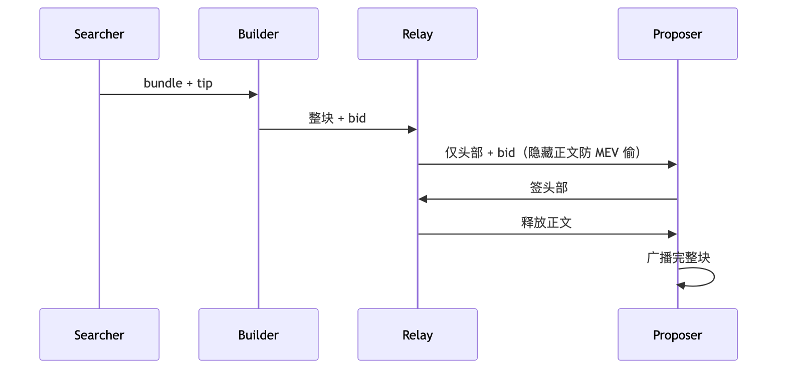
2026-04 约 90% 的 Ethereum 块通过 MEV-Boost 出块，proposer 收入提升 ~261%。2024-12 Flashbots 启动 BuilderNet，把 builder 去中心化。
来源：mdpi.com/2504-2289/9/6/156 / boost.flashbots.net，访问 2026-04-27。
2025 初：两个 builder 占 90%+ 块。原因：大 builder 与 wallet / DEX 签独家 orderflow 协议，小 builder 被边缘化。两 builder 联手拒绝某些 tx → 90% 块都不带 → 这是为什么要推 ePBS + inclusion list（见第 46 章）。
proposer 必须信任 relay 不会在签好头部后拒绝释放正文。2023-04 Flashbots relay bug 导致 ~30 个 slot 出块失败。ePBS 把 PBS 内置进协议消除 relay（详见第 46 章）。
排序权天生有市场价值，不会自然均匀分配；任何"先看见交易"的角色都会牟利；反 MEV 机制必须主动设计——这三条对所有公链/DeFi 协议适用。下一章 ePBS 是把 MEV-Boost 的中介信任 enshrine 进协议的尝试。
MEV-Boost 当前的三个弱点：relay 是中心化信任点（45.6 节）、proposer 可能两面派（拿 bid 后又自己出块）、builder 集中度高（两家占 90%+）。ePBS（enshrined PBS）的思路是把 PBS 角色和奖励直接写进协议消除 relay——builder slash 机制让"不披露完整块"在协议层就被惩罚。
来源：eips.ethereum.org/EIPS/eip-7732，访问 2026-04-27。
| 维度 | MEV-Boost (current) | ePBS (EIP-7732) |
|---|---|---|
| relay 是否需要 | 需要 | 不需要 |
| 信任假设 | 信任 relay | 协议层强制 |
| builder slash | 无 | 有（不披露 → slash） |
| proposer 不诚实 | relay 制约 | 协议层硬制约 |
2025-Q4：early ePBS + BAL devnets
2026-H1：公开测试网 + 双重审计
2026-06（预计）：mainnet 激活（Glamsterdam 升级一部分）
测试网激活已完成多次；Glamsterdam 升级仍在最终审计阶段。具体激活日期未确定，但开发组目标 2026 年内。
来源：indexbox.io 2026 / etherworld.co Devconnect 2025，访问 2026-04-27。
Sigma Prime 2025 发文反对 EIP-7732 进入 Glamsterdam：增加协议复杂度；强制所有 validator 客户端实现新逻辑；builder 去中心化效果未必达成。来源：blog.sigmaprime.io/glamsterdam-eip7732.html，访问 2026-04-27。
proposer 投标前预先指定一组"必须包含的交易"，builder 无法审查这些 tx——反 OFAC-style 审查的协议层补丁，也在 Glamsterdam 候选中。
ePBS 是"协议层吞掉中介"的典型。未来 5 年所有链外信任点（relay / sequencer / oracle）都会被尝试 enshrine 进协议——这是 cryptoeconomics 第一基石（公开可验证）的必然延伸。
Ethereum Gasper finality 12.8 min 是所有主流链最慢的——直接原因是 100 万验证者每 slot 出 200 万消息 / 12s = 17 万 msg/s 的签名聚合压力。SSF（Single Slot Finality）的目标是每 slot finalize ≈ 12s，但任何网络延迟波动就 timeout 停链。3SF（D'Amato et al. 2024，arXiv:2411.00558）是工程妥协方案：每 slot 1 轮投票，3 slot 内 finalize ≈ 36s，把 SSF 的 head+FFG 两轮合并为一轮减少聚合压力。来源：ethereum.org/roadmap/single-slot-finality（2026-04-27）。
| 维度 | SSF（理想） | 3SF（实用） |
|---|---|---|
| 终结时间 | 1 slot ≈ 12s | 3 slot ≈ 36s |
| 每 slot 投票轮数 | 3 轮 | 1 轮 |
| 网络延迟容忍 | 极敏感 | 可承受波动 |
| 工程难度 | 极高 | 高但可行 |
| 学界评估 | 长期目标 | 短中期方案 |
Vitalik 2024-06 建议把 SSF 改解释为 "Speedy Secure Finality"——3SF 也算 SSF（来源：vitalik.eth.limo/general/2024/06/30/epochslot.html，访问 2026-04-27）：
配套工作：验证者数量需从 100 万降到 10 万级别（方案：提高最低 stake 到 1024 ETH / Orbit-SSF 分组轮值 / Aggregator 子网）；BLS 聚合算法优化。
| 链 | 当前 finality | 路线图 |
|---|---|---|
| Ethereum | 12.8 min | 36s（3SF）→ 12s（SSF） |
| Cosmos | 即时（1 块） | 已经是 SSF |
| Solana | 12.8s（32 conf） | 150ms（Alpenglow） |
| Aptos | <1s | 持续优化 |
| Sui Mysticeti | ~250ms | 持续优化 |
Ethereum 慢的代价换来的是 100 万验证者的去中心化——这是 trade-off，不是缺陷。Cosmos / Algorand 之所以快是因为 validator 数量两个数量级以下。
VDF 解决的是 PoS 中的 stake grinding 问题（8 章导引）：leader 选举依赖随机数，而随机数生成方能事后选择性丢弃不利的种子。VDF 让"生成"和"使用"之间强制一段无法压缩的延迟——必须串行计算 T 时间，但验证只需 O(log T)。三性质：串行（无法并行加速）、唯一（输入→唯一输出）、高效验证。这套思路与 PoH（26.2 节）相似但更严格：PoH 验证时间 = 计算时间 O(N)，严格不算 VDF。
共同基础：y = x^(2^T) mod N（T 步串行平方，无法并行）。
- Pietrzak（2018）：proof O(log T)，验证 O(log T)
- Wesolowski（2019）：proof O(1)，验证 O(1)，需 fiat-shamir
详见 eprint.iacr.org/2018/601 和 /2018/623。
PoH = h[i] = SHA256(h[i-1])，每步依赖前一步，无法并行。但验证时间与计算时间相同（O(N)），不满足"验证 << 计算"要求，严格来说不是 VDF——Solana 团队称为"VDF-like"，是工程妥协。
RANDAO 当前问题：proposer 可选择不出块 → 操控一位 bit。VDF 解法：RANDAO 累计后跑一遍 VDF（~1 epoch），proposer 来不及调整。2026-04 状态：仍研究阶段，主网未部署专用 VDF（VDF Alliance ASIC 因进度变慢搁置）。
来源：ethresear.ch/t/verifiable-delay-functions-and-attacks/2365，访问 2026-04-27。
VDF 必须用 ASIC——否则攻击者买 100 倍快的硬件即可"提前算"，违反串行假设。参数选择：T 太小攻击者算得过来，T 太大协议吞吐受限（Ethereum 目标 T ~1-2 epoch）。
Restaking 把"已质押"的 ETH 同时拿来保护其他协议（桥、Oracle、L2 sequencer），相当于一栋房子同时抵给多家银行、都同意违约时可没收。AVS（Actively Validated Service）= 任何借用 Ethereum stake 安全性的应用。这是机制设计上的重大试验——把"安全预算"做成可借贷资源。
TVL $15.26B，市占 93.9%，operator commission 10%，AVS 50+ 个。AVS（Actively Validated Service）：任何借用 Ethereum stake 安全性的应用（跨链桥 / Oracle / L2 sequencer / DA layer）。
来源：abcmoney.co.uk 2025-06；blockeden.xyz 2026-03，访问 2026-04-27。
TVL ~$897M，市占 5.5%。特色：完全 permissionless（任何人能创建 vault），多资产支持。
| 维度 | EigenLayer | Symbiotic |
|---|---|---|
| 准入 | 团队审批 AVS | 完全开放 |
| 资产范围 | ETH-centric | 多资产 |
| 治理 | EIGEN token | 模块化 |
| 启动时间 | 2023 | 2024 |
级联清算路径：同一份 stake 担保 N 个 AVS，一个 AVS slash → stake 减少 → 其他 AVS 安全度下降 → 滚雪球。结构上等同 2008 金融危机的 rehypothecation（重复抵押）。
经济学边界：EigenLayer 借走 $15B = Ethereum 总安全的 5%；每个 AVS 实际分到的安全 = $15B / N，N 越多越稀薄。"号称 $15B 安全" ≠ 攻击需花 $15B——攻击者只需 slash 收益 > slash 成本即可。restaking 不是白送的安全，每个 AVS 必须独立做安全审计 + 经济模型，关注 slash 机制和清算路径。来源：app.thebigwhale.io "Restaking: Post-Hype Reality Check"（2026-04-27）。
第 8 章导引提到 long-range attack，本章展开。已退出的验证者（V_old）私钥仍在手，攻击者低价收购可从历史某点重写链——PoW 攻击者伪造历史必须重新挖矿（算力成本真实），PoS 签名免费，旧私钥就是定时炸弹。
弱主观性是 Ethereum 的标准解法：新节点必须信任一个"不太老的 checkpoint"——信任来源主观（朋友/Etherscan/Lido）。Cardano Genesis（11.5 节）选择不同路线，用 chain density 判定避免外部信任。这两条是当前 PoS 长程攻击的两种主流方案。
| 级别 | 链 | 说明 |
|---|---|---|
| 客观 | Bitcoin / Cardano Genesis | 从 genesis 同步，零外部信任 |
| 弱主观 | Ethereum PoS | 从 WS period 内某 checkpoint 同步 |
Ethereum 当前 WS period 约 2 周。超期未在线的节点重新加入必须接受外部 checkpoint。来源：ethereum.org/developers/docs/consensus-mechanisms/pos/weak-subjectivity（2026-04-27）。
# Lighthouse 客户端
lighthouse beacon_node \
--checkpoint-sync-url https://beaconstate.ethstaker.cc \
--checkpoint-sync-url-timeout 300
# Teku
teku --checkpoint-sync-url https://...
# Prysm
prysm --checkpoint-sync-url https://...
- 自己的另一台节点（最佳）
- 朋友的节点
- 公开 checkpoint 服务（ethstaker / Infura）
- 交易所（Coinbase / Kraken）
来源：lighthouse-book.sigmaprime.io/checkpoint-sync.html，访问 2026-04-27。
①Posterior corruption：事后收购旧私钥（最常见），weak subjectivity 解决；②Stake bleeding：伪造低密度旧链，chain density 判定（Cardano Genesis）可识别；③Costless simulation：签名免费完全不花钱伪造，weak subjectivity + slashing 联合解。
Lido 控制 ~28% stake 接近 33% 红线——stake 集中度让 long-range 从理论走向现实威胁。规律：PoS 链同步永远涉及主观信任，checkpoint 多源校验、定期更新 URL 是运维硬约束。
LST（Liquid Staking Token）= 把 ETH 质押给 Lido 等服务换得可流通的"质押凭证"（Lido stETH ~$30B / Coinbase cbETH / Rocket Pool rETH / Frax sfrxETH）。这是 50 章 long-range 担忧（Lido 28% stake 接近 33% 红线）的另一面——stake 不只过度集中，还在外层做了流动化包装。
挂钩机制要分两层：协议层 stETH 永远 1:1（Lido 退出等 1-5 天队列）；二级市场（Curve/Uniswap）可波动到 0.93-1.00。Shapella 升级（2023-04）开放提取后套利让偏离通常 <0.2%。但极端市场会破坏这条收敛——2022-05 Terra/Luna 崩盘 → DeFi 流动性枯竭 → 3AC 等抛售 stETH → Curve 上 stETH 跌到 ~0.93 ETH → Aave 抵押头寸清算 ~$180M。链上 stake 安全，LST 杠杆头寸不安全，是两件事。
级联清算路径：deposit stETH → 借 ETH → 再 stake，Aave 上形成 $9.5B 抵押。stETH 跌 5% → 清算潮 → 二级市场压价 → 死亡螺旋。2024 起 LRT（Liquid Restaking Token）在 LST 上再加一层杠杆，底层 stETH 出问题 LRT 同时崩。运维规律：区分"协议层 1:1"与"二级市场价"；极端市场假设 LST 短期 -10% 提取队列延长 5x；LRT 清算路径不能循环依赖底层 LST。来源：dlnews.com（2026-04-27）。
2026-04 Ethereum 全节点 ~1.2 TB、归档节点 ~18 TB，每年增长 400-600 GB。这是节点中心化的隐性源头——硬件门槛抬高，能跑节点的人变少，34 章 finality stall 的"客户端 stake >33%"风险只会被放大。EIP-4444 的解法：节点不再需要 Merge 之前（2022-09）的区块数据，全节点存储减少 300-500 GB，2 TB 硬盘可流畅跑节点（2025-07-08 实施）。
| 客户端 | 版本 | 默认 |
|---|---|---|
| Geth | v1.16.0+ | 支持但需手动 |
| Nethermind | v1.32.2+ | 默认开启 |
| Besu | v25.7.0+ | 支持 |
| Erigon | v3.0.12+ | 支持 |
来源：Ethereum Foundation Blog 2025-07-08；blockchain.news 2025-07（2026-04-27）。
普通全节点不存旧数据，归档节点（Etherscan/Alchemy）继续保留并提供 API。应用开发者从"自建归档节点"迁移到"调用归档 API"。长期 EIP-7927 元提案推 rolling history expiry，每节点只存最近 1 年。当前归档节点主要由大公司维护——是 Ethereum 数据层的中心化点；Portal Network 和 The Graph 是去中心化方向。
各链存储压力对比：Bitcoin ~50 GB/年（仅留 UTXO + recent blocks）；Ethereum ~500 GB/年（EIP-4444 + Verkle）；Solana ~4 TB/年（自带 snapshot + warehouse，是 Solana validator 必须 32 核 256GB SSD 的根本原因）；Aptos ~1 TB/年（sharded archive）。Solana 的存储压力是 Ethereum 的 8 倍——这条数字解释了"为什么 Solana 节点门槛远高于 Ethereum"，第 26 章性能与去中心化对比的物理底层。来源：eips.ethereum.org/EIPS/eip-7927（2026-04-27）。
History 可删（52 章 EIP-4444），state（账户余额、合约存储）是共识必需，不能简单删。2026-04 Ethereum state ~250 GB 且增长，10 年后 1+ TB。经济上不可持续：用户付一次 SSTORE，节点永远存——这是 SSTORE 当前定价模型的结构性 bug。
Verkle Trees 用 vector commitment（Pedersen/KZG）替换 Merkle Patricia Trie，state proof 缩小 ~30 倍（32 KB → 1-2 KB / 账户）。2025-12-03 Fusaka 升级已部署主网。stateless client 思路：每块附带 ~1 MB Verkle witness（本块涉及账户的 proof），节点无需存 state 即可验证。节点门槛 1.2 TB → 50 GB，同步时间天 → 小时。
EIP-7736 在 Verkle 之上加 state expiry：长期未访问的 state（2 年没动的合约存储槽）被标记 expired，节点可删除；复活时提交 Verkle 证明 + 复活费。来源：notes.ethereum.org/@vbuterin/verkle_and_state_expiry_proposal、ethereum.org/roadmap/verkle-trees（2026-04-27）。
路线图：2025-12 Fusaka Verkle 主网；2026-H1 Glamsterdam ePBS/BAL；2026-H2 Hegota state expiry 上线 + Verkle 优化。经济模型从"一次付费永久存"改为"租地模型"——不续约则过期，复活要再付费。
实施挑战两点：①已部署合约假设 state 永在，expiry 后可能突然失效（解法：重要 state 白名单 / 推迟 expiry 到 5 年后）；②复活费定价两难——太低攻击者用垃圾复活压垮节点，太高用户体验差。
各链 state 策略：Ethereum Verkle + 计划 expiry；Solana 2020 已上线 rent model（每账户每年付租金否则回收）；Near 类似 Solana；Cosmos 应用层各自决定。Solana 的 rent model 是 Ethereum 团队反复学习的对象——这是少数几个 Ethereum 抄 Solana 的方向。来源：levex.com Ethereum roadmap 2025-2027（2026-04-27）。
Covenant = 限制 UTXO 未来只能怎么花的脚本约束。当前 Bitcoin 脚本做不到，社区用 presigned transactions 凑合（繁琐、易丢、不可升级）。Covenant 解锁的用例：vault（timelock 防丢私钥）、支付池（多人共享 UTXO）、拥堵控制、L2/Drivechain。
主要提案对照：
| 提案 | 核心思路 | 现状 |
|---|---|---|
| BIP-119 CTV | 新 opcode 接 hash 模板，下笔 tx outputs hash 必须匹配 | 最简洁，争议最小，未激活 |
| BIP-348 CSFS | 脚本可验证任意数据签名（不只是 tx hash） | 与 CTV 组合 = 5 年最接近共识的方案 |
| BIP-345 OP_VAULT | 丢私钥时恢复密钥触发 24h timelock | 依赖 CTV，激活路径排队中 |
| BIP-300/301 Drivechains | 主链 lock，侧链发等量，miner 投票 unlock | 2024 被 core 团队否决（争议：miner 决定主链余额） |
软分叉激活路径：BIP 提交 → core 评审（数月-数年）→ 矿工 signal 90%+ → 节点升级 → 激活。SegWit 耗时 1 年+，Taproot 2 年，covenants 至 2026-04 仍未达共识。Bitcoin 升级慢是 feature 不是 bug——这是 14 年零协议级 reorg 的工程纪录的另一面。当前做 BTC L2 / 复杂逻辑只能用 Lightning + presigned tx + multisig。长期看 CTV+CSFS 是最可能的下一次软分叉。来源：covenants.info、blog.bitfinex.com 2025 covenant 综述、bip119.com（2026-04-27）。
| 主题 | 模块 |
|---|---|
| 签名 / 哈希 / Merkle 树细节 | 01 密码学基础 |
| EVM 指令集 / gas / 账户抽象 | 03 以太坊与 EVM |
| Liquid staking / restaking 应用 | 06 DeFi 协议工程 |
| Rollup sequencer / shared sequencer | 07 L2 与扩容 |
| MEV 攻防 / Flashbots SDK | 11 基础设施与工具 |
本册回答的是"共识层选什么、为什么"。模块 01 提供原子工具（哈希让 PoW 成立、ECDSA 让签名验证成立、VRF 让 PoS 抽签安全），本册把工具组合成完整共识系统。模块 03《以太坊与 EVM》在本册第 9 章 Gasper 共识之上展开——EVM 指令集、gas 定价、账户抽象，每个执行层设计选择都能追溯到共识层的某个约束。